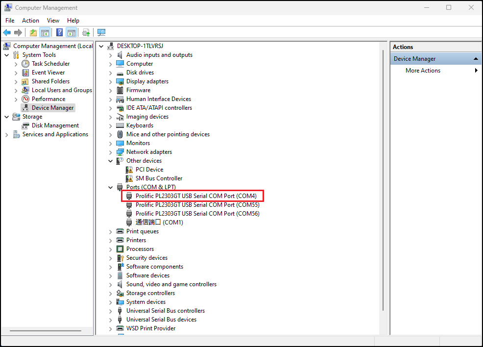
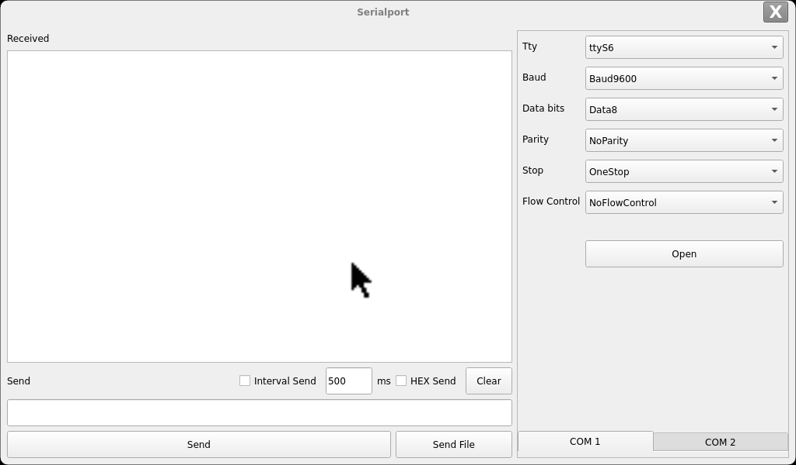
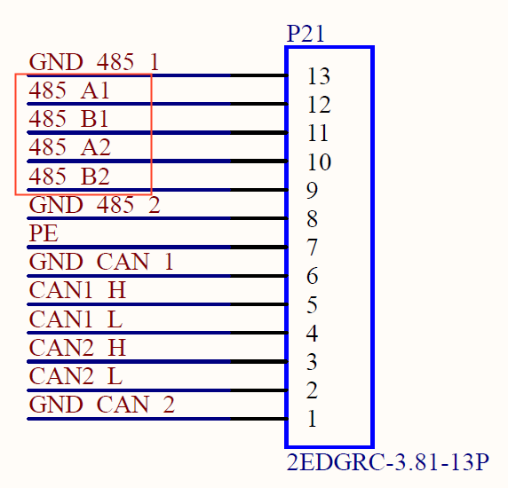
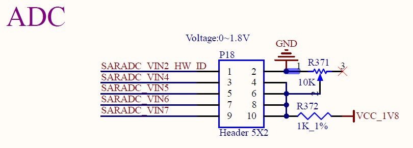
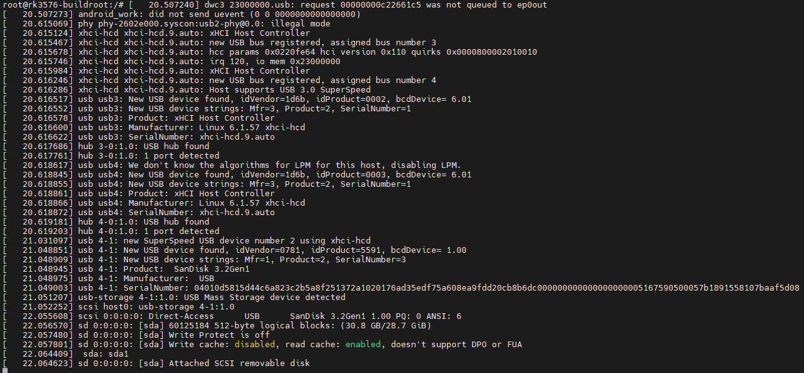
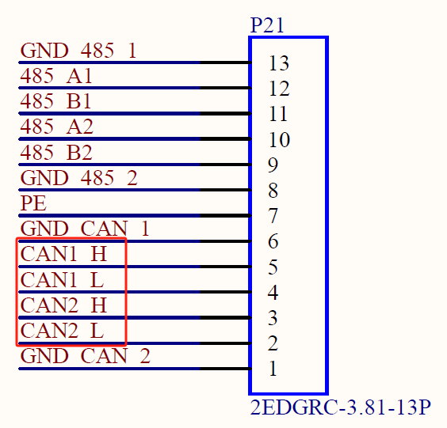
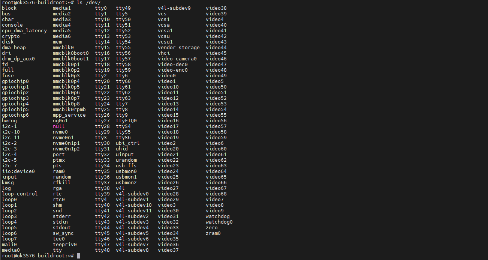

OK3576-C_Linux6.1.84_User’s Manual_V1.1
Document classification: □ Top secret □ Secret □ Internal information ■ Open
Copyright
The copyright of this manual belongs to Baoding Folinx Embedded Technology Co., Ltd. Without the written permission of our company, no organizations or individuals have the right to copy, distribute, or reproduce any part of this manual in any form, and violators will be held legally responsible.
Forlinx adheres to copyrights of all graphics and texts used in all publications in original or license-free forms.
The drivers and utilities used for the components are subject to the copyrights of the respective manufacturers. The license conditions of the respective manufacturer are to be adhered to. Related license expenses for the operating system and applications should be calculated/declared separately by the related party or its representatives.
Overview
This manual is designed to help you quickly familiarize yourselves with the product, and understand the interface functions and testing methods. It primarily covers the testing of interface functions on the development board, the methods for flashing images, and troubleshooting procedures for common issues encountered in use. In the process of testing, some commands are annotated to facilitate the your understanding, mainly for practical use. Please refer to “OK3576-C Linux_User’s Compilation Manual” provided by Forlinx for kernel compilation, related application compilation methods and development environment construction.
There are total six parts:
Chapter 1. provides an overview of the product, briefly introducing the interface resources of the development board, the relevant driver paths in the kernel source code, supported flashing and booting methods, as well as explanations of key sections in the documentation;
Chapter 2. is the fast boot/startup of the product, which can adopt two ways of serial port login and network login;
Chapter 3. provides function test of product desktop and QT interface;
Chapter 4. is the command line operation of the product for functional testing;
Chapter 5. is the multimedia test of the product, including the playback test of the camera and the video hardware codec test;
Chapter 6. is the image update of the product, which mainly describes the method of updating the image to the storage device. Users can choose the corresponding flashing mode according to the actual situation.
A description of some of the symbols and formats in the manual:
Format |
Meaning |
|---|---|
Note |
Note or information that requires special attention, be sure to read carefully |
üìö |
Relevant notes on the test chapters |
Ô∏èüõ§Ô∏èÔ∏èÔ∏è |
Indicates the related path. |
Blue on gray |
Refers to commands entered at the command line(Manual input required). |
Black font on gray background |
Serial port output message after entering a command |
Bold black on gray background |
Key information in the serial port output message |
// |
Interpretation of input instructions or output information |
Username@Hostname |
root@rk3576-buildroot: Development board serial port login account information forlinx @ ok3576: development board remote login account information, forlinx @ Linux: development environment Linux account information. Users can determine the environment for function operation through this information. |
Example: Check the loading status of the NXP AW9098 module driver:
root@rk3576-buildroot:~$ lsmod //View loaded module
Module Size Used by
moal 602112 0
mlan 466944 1 moal
root@rk3576-buildroot：The username is root and the hostname is forlinx, indicating that the root user is used for operations on the development board.
// : Interpretation of command operations or printed information without input.
lsmod：Blue font on a gray background indicates relevant commands that need to be entered manually.
moal 602112 0：The black font with gray background is the output information after the input command, and the bold font is the key information, which indicates that the NXP AW9098 module driver has been loaded.
Application Scope
This manual is mainly applicable to the Linux6.1.84 operating system on the Forlinx OK3576-C platform. Other platforms can also refer to it, but there will be differences between different platforms. Please make modifications according to the actual conditions.
Revision History
Date |
Manual Version |
SoM Version |
Carrier Board Version |
Revision History |
|---|---|---|---|---|
23/01/2025 |
V1.0 |
V1.1 |
V1.1 and Above |
OK3576-C_Linux6.1.84 Software Manual Initial Version |
24/07/2025 |
V1.1 |
V1.1 |
V1.1 and Above |
1. Updating the WIFI testing chapter; 2. Updating the Bluetooth testing chapter; 3. Updating the CAN testing chapter; 4. Adding the WIFI AP mode testing chapter; 5. Adding the chapter on replacing the boot logo; 6. Adding the chapter on boot - auto - start scripts; 7. Adding picture descriptions for entering each mode in the system flashing chapter. |
1. Development Board Description
1.1 OK3576 Development Board Description
RK3576 processor, based on ARM64 architecture, is known for its low power consumption and high performance. It integrates 4 x Cortex-A53 and 4 x Cortex-A72 cores, along with dedicated NEON co-processor and NPU for neural network processing. It’s widely used in various fields such as computers, smartphones, and digital multimedia devices.
The connection between SoM and the carrier board is board-to-board.
Note: Hardware parameters are no longer described in this software manual. Before referring to this manual for software development, please read the “OK3576-C Hardware Manual” to understand the product naming rules and the hardware configuration information of the product you are using, which will help you to use this product.
1.2 Introduction to Linux 6.1.84 System Software Resources
Device |
Location of driver source code in the kernel |
Device Name |
|---|---|---|
LCD Backlight Driver |
drivers/video/backlight/pwm_bl.c |
/sys/class/backlight |
USB Port |
drivers/usb/storage/ |
|
USB Mouse |
drivers/hid/usbhid/ |
/dev/input/mice |
Ethernet |
drivers/net/ethernet/stmicro/stmmac |
|
SD/micro TF card driver |
drivers/mmc/host/dw_mmc-rockchip.c |
/dev/block/mmcblk1pX |
EMMC Driver |
drivers/mmc/host/dw_mmc-rockchip.c |
/dev/block/mmcblk2pX |
OV13850 |
drivers/media/i2c/ov13855.c |
/dev/videoX |
LCD Controller |
drivers/gpu/drm/rockchip/rockchip_drm_vop.c |
|
MIPI CSI |
drivers/phy/rockchip/phy-rockchip-mipi-rx.c |
|
MIPI DSI |
drivers/phy/rockchip/phy-rockchip-inno-mipi-dphy.c |
|
LCD Touch Driver |
drivers/input/touchscreen/gt9xx/* drivers/input/touchscreen/edt-ft5x06.c |
/dev/input/eventX |
RTC Real Time Clock Driver |
drivers/rtc/rtc-rx8010.c drivers/rtc/rtc-pcf8563.c |
/dev/rtc0 |
serial port |
drivers/tty/serial/8250/8250_dw.c |
/dev/ttySX |
Key Driver |
drivers/input/keyboard/adc-keys.c |
/dev/input/eventX |
LED |
drivers/leds/leds-gpio.c |
|
I2S |
sound/soc/rockchip/rockchip_i2s.c |
|
Audio Driver |
sound/soc/codecs/nau8822.c |
/dev/snd/ |
PMIC |
drivers/mfd/rk806.c drivers/regulator/rk860x-regulator.c |
|
PCIE |
drivers/pci/controller/pcie-rockchip.c |
|
Watchdog |
drivers/watchdog/dw_wdt.c |
|
SPI |
drivers/spi/spi-rockchip.c |
|
PWM |
drivers/video/backlight/pwm_bl.c |
1.3 EMMC Memory Partition Table
The following table shows the eMMC memory partition information for the Linux operating system (calculated with a block size of 512bit):
Partition Index |
Name |
Offset / block |
Size/block |
content |
|---|---|---|---|---|
N/A |
security |
0x00000000 |
0x00004000 |
MiniLoaderAll.bin |
1 |
uboot |
0x00004000 |
0x00004000 |
uboot.img |
2 |
misc |
0x00006000 |
0x00002000 |
misc.img |
3 |
boot |
0x00008000 |
0x00020000 |
boot.img |
4 |
recovery |
0x00028000 |
0x00040000 |
recovery.img |
5 |
backup |
0x00068000 |
0x00010000 |
|
6 |
rootfs |
0x00078000 |
0x01c00000 |
rootfs.img |
7 |
oem |
0x01c78000 |
0x00040000 |
oem.img |
8 |
userdata |
0x01cb8000 |
grow |
userdata.img |
2. Fast Startup
2.1 Preparation Before Startup
OK3576 development board has two system login modes: Serial login and hardware preparation before system startup:
12V-3A DC Power Cable
Debugging serial cable (Serial Login)
The debug serial port on the development board is a Type-C USB jack, so users can use a USB to Type-C cable to connect the development board to a PC and then check the board’s status.
Screen: Connect the screen according to the development board interface (optional if display is not needed).
2.2 Debugging Serial Driver Installation
The debugging serial port of the OK3576-C - C platform is a Type - C interface. There is an on - board USB to UART chip, so there’s no need to purchase a USB to serial port debugging tool. It is extremely simple and convenient to use.
Please use the driver package DriverAssitant_v5.1.1.zip provided in the \ Linux \ Tools \ directory of the user profile to install the driver.
Run DriverInstall.exe directly after the unzipping is completed; to ensure the driver is the latest version, please unstall the driver first, then install again.
2.3 Serial Login
2.3.1 Serial Port Connection Settings
Note:
Serial port settings: baud rate 115200, data bit 8, stop bit 1, no parity bit, no flow control;
Software requirements: PC Windows system needs to install the super terminal software. Because the terminal software has many types, you can choose your familiar one.
In the following, take the putty terminal software as an example to introduce the serial port login method:
Step 1: Connect the serial port number of the computer—check the serial port number from the device manager (Based on the port actually recognized by the computer );

Step 2: Open and set up putty, then set the“ line according to the COM port of the computer used, baud rate 115200;

Step 3: After the setting, input the COM port used by the computer in Saved Sessions. The following figure takes COM3 as an example, save the settings, open the serial port again later, and click on the saved port number;

Step 4: Turn on the development board’s power switch. The serial port will print out the information output, including the username and password for Linux (no root privileges). If you need to use the root login, then the username and password are root and root, respectively.
input-event-daemon: Adding device: /dev/input/event9...
input-event-daemon: Start listening on 12 devices...
done
root@rk3576-buildroot:/# [ 37.424104] vbus5v0_typec0: disabling
[ 37.424151] vbus5v0_typec1: disabling
ok3576-buildroot login: forlinx
Password:
forlinx@ok3576-buildroot:~$
2.3.2 Serial Login Common Problems
If the computer does not have a serial port, we can use the USB to serial cable to connect with the development board. ( Using a USB to serial cable connection requires the matching driver).
It is better to use a good quality cable to avoid error codes.
2.4 System Shutdown
In general, the power can be turned off directly. If there is data storage, function use, or other operations, avoid turning off the power arbitrarily during operation to prevent irreversible damage to the file. In such cases, only re-flashing the firmware can resolve the issue. To ensure that data is not completely written, enter the sync command to complete data synchronization before turning off the power.
3. OK3576 Platform Interface Function Use and Test
OK3576 platform has excellent support for Qt, here is the demo desktop.
3.1 Interface Function Introduction
The desktop is displayed as follows after the development board is booted:
3.2 Browser Test
“DemoBrowser” is a simple and practical web browser. When using it, please make sure that the network is smooth, and make sure that the dns is available before accessing the external network; when the browser starts, it will visit the official website of Forlinx Embedded by default, and the interface is as follows:
Application Icons
Note: If the time of the development board is abnormal, it will cause problems with the certificate. Do not shut down the power immediately after using the browser or the sync command at the command line. Otherwise, it may cause the browser to exit abnormally and not work properly, and can only be solved by re-burning.
The interface is as follows:
Exit this browser via the upper navigation bar File->Quit.
3.3 Music Play Test
“Musicplayer” is a simple audio test application that can be used to test the function of the sound card or as a simple audio player.
Application Icons
Click the button in the lower left corner to select Test Audio/userdata/piano2-CoolEdit.mp3.
3.4 Video Play Test
Click the desktop icon to open the video player qplayer

Application Icons

Note: The directory where the test video file is located:/media/forlinx/video/*.mp4
3.5 4G/5G Test
Note: This test requires the insertion of an Internet-enabled SIM card; Refer to the command line function test 5G section of this manual for specific operation description.
“4G/5G” test program is used to test the OK3576 external 5G module (RM500U). Before testing, please power off the development board, access the 5G module, insert the SIM card, start the development board, and open the test application.
Meanwhile, the test supports the 4G module (EM05-CE), inserts the 4G module and SIM card in the case of power failure, and opens the test application after powering up the system to start.
Application Icons
Click the “Start” button, and the program will automatically enter the dialing process, obtain the IP address, and set the DNS, etc. After patiently waiting for a few seconds, when the IP address is displayed on the screen, exit the current application. Enter the DemoBrowser web browser to test. If the application can be opened to access the official website of the embedded system, it indicates that the connection is successful.
3.6 Watchdog Test
“WatchDog” is an application used to test the watchdog status.
Application Icons
Click start to open the dog feeding function by default and feed the dog regularly. At this time, the system will not restart. When unchecking feed dog, count down 10s and the system enters reboot. It indicates that the Watchdog function is normal.
3.7 Serial Port Test
Click on the desktop icon to use it to test the OK3576 on-board UART interface.
Application Icons
Interface Display
The schematic diagram of the OK3576 platform carrier board indicates the presence of UART0, UART4, UART5, and UART6, totaling 4 serial ports. UART0 is designated as the debug port, UART4 as the Bluetooth port, and UART5 and UART6 as 485 ports.
Testing will use two RS485 ports, UART5 and UART6. Before testing, ensure proper connection of the two RS485 interfaces: connect A to A and B to B. The two RS485 carrier board interfaces are as follows:
Test method：
Set ttyS6,baud rate 9600, 8 data bits and1 stop bit in the interface. At last click Open.

And use the serial port to log in to the development board, input in the serial port terminal echo “forlinx_uart_test.1234567890…” > /dev/ttyS5. The test interface receives the data:
Output cat/dev/ttyS5 on the serial port terminal, click the input box under send on the page, use the keyboard to input “abcdefg”, and click send. At this point, ttyS5 can receive the message.
3.8 Backlight Test
BackLight is an LCD backlight adjustment application:
Application Icons
Application Interfaces
Drag the slider in the interface to set the LCD backlight brightness.
3.9 Key Test
The “Keypad” is used to test whether the platform’s own keys are available:
Application Icons
By default, OK3576 platform configures 4 physical keys V +, V-, MENU and ESC as volume + key, volume- key, Menu and back key respectively. The corresponding key in the test application will turn blue when pressing the key, indicating that the key is in normal status.
3.10 RTC Test
Through the “RTC” application, the current system time can be viewed and set:
Application Icons
After selecting Manual, you can set the time manually. Select date and time, and click apply to complete the setting. When the RTC backup battery is installed, the time will not be lost after power failure and restart.
Click Auto to perform network timing, and click apply to perform timing successfully.
3.11 Network Configuration Test
OK3568 can select DHCP and static modes through “Network” network configuration application, and static mode can configure IP address, subnet mask, gateway and DNS.

Applications Icons
Select eth0 or eth1, then select DHCP, and click “Application” at the bottom of the interface to restart the network and automatically obtain IP.
Click STATIC, select Set Static IP, enter the IP to be set in the IP column, and enter the subnet mask in the netmask column.
Enter Gateway in the DNS column and DNS in the DNS column.
After entering the URL and clicking the ping key, the result of the ping will be prompted in the prompt box on the left, as follows:
Note: Information such as ip set in STATIC mode is saved to the relevant configuration file of the system so each reboot will use the network information set this time; network information configured in DHCP mode, on the other hand, does not need to care about this; ip addresses are dynamically assigned every reboot.
3.12 Database Test
Click the desktop icon to test the database using Sqlite.
Application Icons
3.13 System Information Test
Click the desktop icon to display information about the system.
Application Icons
4. OK3576 Command Line Tool Application and Test
The OK3576 platform has various built-in command line tools available to users.
4.1 System Information Query
To view kernel and cpu information, enter the following command
root@ok3576-buildroot:/# uname -a
Linux ok3576-buildroot 6.1.75 #4 SMP Wed Jul 24 09:06:40 CST 2024 aarch64 GNU/Linux
View operating system information:
root@ok3576-buildroot:/# cat /etc/issue
Welcome to RK3576 Buildroot
View environment variable information:
root@ok3576-buildroot:/# env
SHELL=/bin/sh
GST_V4L2_PREFERRED_FOURCC=NV12:YU12:NV16:YUY2
GST_VIDEO_CONVERT_PREFERRED_FORMAT=NV12:NV16:I420:YUY2
CHROMIUM_FLAGS=--enable-wayland-ime
GST_V4L2_USE_LIBV4L2=1
WESTON_DRM_MIN_BUFFERS=2
WL_OUTPUT_VERSION=3
GST_INSPECT_NO_COLORS=1
PULSE_HOME=/userdata/.pulse
EDITOR=/bin/vi
WESTON_DRM_KEEP_RATIO=1
GST_DEBUG_NO_COLOR=1
PWD=/
HOME=/
LANG=en_US.UTF-8
ADB_TCP_PORT=5555
WESTON_FREEZE_DISPLAY=/tmp/.freeze_weston
WAYLANDSINK_FORCE_DMABUF=1
GST_V4L2SRC_DEFAULT_DEVICE=/dev/video-camera0
QT_QPA_PLATFORM=wayland
USB_FW_VERSION=0x0310
TERM=vt102
USER=root
AUTOAUDIOSINK_PREFERRED=pulsesink
ADBD_SHELL=/bin/bash
GST_V4L2SRC_RK_DEVICES=_mainpath:_selfpath:_bypass:_scale
WESTON_DRM_MIRROR=1
SHLVL=1
USB_FUNCS=adb
WESTON_DISABLE_ATOMIC=1
USB_MANUFACTURER=Rockchip
USB_PRODUCT=rk3xxx
XDG_RUNTIME_DIR=/var/run
USB_VENDOR_ID=0x2207
PLAYBIN2_PREFERRED_AUDIOSINK=pulsesink
PATH=/usr/bin:/usr/sbin
storagemedia=emmc
GST_V4L2SRC_MAX_RESOLUTION=3840x2160
GST_VIDEO_DECODER_QOS=0
_=/usr/bin/env
4.2 Frequency Test
Note: Quad-core A53 is cpu0, cpu1, cpu2, cpu3; Quad-core A72 is cpu5, cpu6, cpu7, cpu8. This process takes cpu0 as an example: the actual process of cpu1, cpu2, cpu3 will be changed at the same time; cpu4, cpu5, cpu6, cpu7 will not affect each other when operated individually.
All cpufreq governor types supported in the current kernel:
root@ok3576-buildroot:/# cat /sys/devices/system/cpu/cpu0/cpufreq/scaling_available_governors
interactive conservative ondemand userspace powersave performance schedutil
The userspace indicates user mode, in which other users’ programs can adjust the CPU frequency.
View the current CPU supported frequency level.
root@ok3576-buildroot:/# cat /sys/devices/system/cpu/cpu0/cpufreq/scaling_available_frequencies
408000 600000 816000 1008000 1200000 1416000 1608000 1800000 2016000
Set to user mode and modify the frequency to 2016000：
View the modified current frequency:
root@ok3576-buildroot:/# cat /sys/devices/system/cpu/cpu0/cpufreq/cpuinfo_cur_freq
1416000
View the frequency:
root@ok3576-buildroot:/# echo userspace > /sys/devices/system/cpu/cpu0/cpufreq/scaling_governor
root@ok3576-buildroot:/# echo 2016000> /sys/devices/system/cpu/cpu0/cpufreq/scaling_setspeed
View the modified current frequency:
root@ok3576-buildroot:/# cat /sys/devices/system/cpu/cpu0/cpufreq/cpuinfo_cur_freq
2016000
4.3 Temperature Test
View the temperature value:
root@ok3576-buildroot:/# cat /sys/class/thermal/thermal_zone0/temp
45307
The temperature value is 45.3°C.
4.4 DDR Test
Use a memtester to do memory stress testing.
root@ok3576-buildroot:/# memtester 100M 1
memtester version 4.5.1_20231020 (32-bit)
Copyright (C) 2001-2020 Charles Cazabon.
Licensed under the GNU General Public License version 2 (only).
pagesize is 4096
pagesizemask is 0xfffffffffffff000
want 100MB (104857600 bytes)
got 100MB (104857600 bytes), trying mlock ...locked.
testing from phyaddress:0x4fc3c000
get chip name: (null)
get ddr bw: (null)
io bw x32
Loop 1/1:
Stuck Address : ok
Random Value : ok
Compare XOR : ok
Compare SUB : ok
Compare MUL : ok
Compare DIV : ok
Compare OR : ok
Compare AND : ok
Sequential Increment: ok
Solid Bits : ok
Block Sequential : ok
Checkerboard : ok
Bit Spread : ok
Bit Flip : ok
Walking Ones : ok
Walking Zeroes : ok
8-bit Writes : ok
16-bit Writes : ok
*************************************************************
memtester result:
Log: had found 0 failures.
Status: PASS.
*************************************************************
4.5 Watchdog Test
Watchdog is a function often used in embedded systems. The device node of watchdog in OK3576 is /dev/watchdog. This test provides two test procedures, and the user selects one test according to the actual situation.
Start the watchdog, set the reset time to 10s, and kick the dog regularly.
If usingfltest_watchdog, it turns on the watchdog and kick it, so the system does not reboot.
root@ok3576-buildroot:/# fltest_watchdog
Watchdog Ticking Away!
When using ctrl+c to end the test program, kicking the dog is stopped, the watchdog is on, and the system is reset after 10s.
If you do not want to reset, enter the shutdown watchdog command within 10s after finishing the program:
root@ok3576-buildroot:/# fltest_watchdog -d //Turn off the watchdog
Start watchdog, set reset time 10s, do not kick the watchdog.
Execute the command fltest_watchdogrestart, this command will turn on the watchdog but will not kick the watchdog and the system will reboot after 10s.
root@ok3576-buildroot:/# fltest_watchdogrestart
4.6 RTC Function Test
Note: Ensure button cell batteries are installed & voltage is normal.
RTC test: The main way to set the software and hardware time is by using the date and hwclock utilities. When performing the board power-down and power-up test, the software clock reads whether the RTC clock is synchronized or not.
Time setting
root@ok3576-buildroot:/# date -s "2022-12-12 17:23:00" //Set the software time
Mon Dec 12 17:23:00 UTC 2022
root@ok3576-buildroot:/# hwclock -wu //Synchronize software time to hardware time
root@ok3576-buildroot:/# hwclock -r //Display hardware time
Mon Dec 12 17:23:26 2022 0.000000 seconds
Then power down and power up the board, enter the system, and read the system time. After that, we can see that the time has synchronized.
root@rk3576-buildroot:/# date
Mon Dec 12 17:23:50 UTC 2022
4.7 Key Test
Use the fltest_keytest command line tool to test the keys. fltest_keytest currently supports the test of four keys on the carrier board, VOL+, VOL-, MENU, and ESC, with key codes 115, 114, 139, and 158, respectively.
Execute the following command:
root@ok3576-buildroot:/# fltest_keytest
At this point, press the lift button in sequence, and the following can be output on the terminal:
key115 Presse // VOL+press
key115 Released // VOL+release
key114 Presse // VOL-press
key114 Released // VOL-release
key139 Presse // MENU
key139 Released // MENU release
key158 Presse // ESC press
key158 Released // ESC release
4.8 Ethernet Configuration
OK3576-C board features two Gigabit Ethernet ports. When connected to the network via Ethernet cables, eth0 is configured with a static IP by default, while eth1 utilizes a default dynamic IP assignment strategy.
Check the eth0 and eth1 configuration files, the path of the configuration file is: /etc/network/interfaces, and the configuration content of the static IP setting is:
auto lo
iface lo inet loopback
//Here's what needs to be added
auto eth0
iface eth0 inet static
address 192.168.0.232
netmask 255.255.255.0
gateway 192.168.0.1
The dynamic allocation configuration includes:
auto lo
iface lo inet loopback
//Here's what needs to be added
auto eth1
iface eth1 inet dhcp
Parameter |
Meaning |
|---|---|
iface |
Used to specify a network card that requires a fixed IP |
address |
Used to specify an IP address that needs to be fixed |
netmask |
Used to set the subnet mask |
gateway |
Used to specify a gateway |
You can manually modify the NIC configuration, use the sync file sync command after setting, reboot the development board, or restart the service, until the configuration takes effect.
root@ok3576-buildroot:/# ifdown -a
root@ok3576-buildroot:/# ifup -a
Streaming Test
4.9 UART 485 Test
The schematic diagram of the OK3576 platform carrier board indicates the presence of UART0, UART4, UART5, and UART6, totaling 4 serial ports. UART0 is designated as the debug port, UART4 as the Bluetooth port, and UART5 and UART6 as 485 ports.
UART |
Device Nodes |
Description |
|---|---|---|
UART0 |
Debugging serial port cannot be used directly for this test. |
|
UART4 |
/dev/ttyS4 |
It is used for Bluetooth and is not separately pinned out and can’t be directly used for this test. |
UART5 |
/dev/ttyS5 |
RS485 |
UART6 |
/dev/ttyS6 |
RS485 |
Testing will use two RS485 ports, UART5 and UART6. Before testing, ensure proper connection of the two RS485 interfaces: connect A to A and B to B. The two RS485 carrier board interfaces are as follows:

Use two terminals to log in to the board, one UART0 debug port and the other using SSH.
Debug terminal
root@ok3576-buildroot:/# echo 123456 > /dev/ttyS5 //Send data
root@ok3576-buildroot:/# cat /dev/ttyS5 //Receive data, which can be received when ttyS6 sends data
111111
SSH terminal
root@ok3576-buildroot:~# cat /dev/ttyS6 //Receive data, which can be received when ttyS6 sends data
123456
root@ok3576-buildroot:~# echo 111111 > /dev/ttyS6 //Send data
4.10 ADC Test
OK3576-C development board provides 8 x ADC internally, with saradc2, saradc4, saradc5, saradc6, and saradc7 accessible at port P18. These channels can be tested by connecting jumpers to the adjacent variable resistors. The hardware diagram of the ADC pins is as follows. The current chip uses a 1.8V reference voltage corresponding to a maximum value of 4096 for the 12-bit ADC. Select saradc4 for testing and use jumper caps to connect pins 3 and 4 of port P18.

Test adjustable resistance value
root@ok3576-buildroot:/# cd /sys/bus/iio/devices/iio:device0
root@ok3576-buildroot:/sys/bus/iio/devices/iio:device0# cat in_voltage4_raw
1095
4.11 TF Card Test
Note: The TF card mount directory is /run/media/ and supports hot-swapping.
1. Insert the TF card into the TF card slot on the carrier board before powe-up . Then power up and start, run the command dmesg, and the terminal will have the following printed information:
2. Check the mount directory:
root@ok3576-buildroot:/# mount | grep "mmcblk1p1"
/dev/mmcblk1p1 on /run/media/mmcblk1p1 type vfat (rw,relatime,gid=6,fmask=0007,dmask=0007,allow_utime=0020,codepage=936,iocharset=utf8,shortname=mixed,errors=remount-ro)
3. Write test:
root@ok3576-buildroot:/# dd if=/dev/zero of=/run/media/mmcblk1p1/test bs=1M count=100 conv=fsync
100+0 records in
100+0 records out
104857600 bytes (105 MB, 100 MiB) copied, 4.4581 s, 23.5 MB/s
4. Read test:
Note: To ensure the accuracy of the data, please restart the development board to test the reading speed.
root@ok3576-buildroot:/# dd if=/run/media/mmcblk1p1/test of=/dev/null bs=1M
100+0 records in
100+0 records out
104857600 bytes (105 MB, 100 MiB) copied, 1.17886 s, 88.9 MB/s
5. After using the TF card, uninstall it with umount before ejecting it.
root@ok3576-buildroot:/# umount /run/media/mmcblk1p1
Note: Plug and unplug the TF card after exiting the TF card mounting path.
4.12 EMMC Test
The OK3576 platform eMMC runs in HS400 mode 200MHz clock by default. The following is a simple eMMC read/write speed test: taking the read/write ext4 file system as an example.
Write test:
root@ok3576-buildroot:/# dd if=/dev/zero of=/test bs=1M count=500 conv=fsync
500+0 records in
500+0 records out
524288000 bytes (524 MB, 500 MiB) copied, 2.81396 s, 186 MB/s
Read test：
Note: To ensure the accuracy of the data, please restart the development board to test the reading speed.
root@ok3576-buildroot:/# dd if=/test of=/dev/null bs=1M
500+0 records in
500+0 records out
524288000 bytes (524 MB, 500 MiB) copied, 1.99774 s, 262 MB/s
4.13 USB Mouse Test
Connect the USB mouse to the USB interface of the OK3576 platform and use the dmesg command, the serial terminal prints the following information:
At this time, the arrow cursor appears on the screen, the mouse can work normally.
4.14 USB3.0
OK3576 carrier board uses a USB 3.0 hub to split the 3-way USB 3.0 host, which can be connected to a USB mouse, USB keyboard, USB flash drive, and other devices and supports hot-swapping of the above devices. Demonstration with a mounting USB flash drive, the current USB flash drive test support up to 32G, but no test for 32G or above.
The terminal prints information about the USB flash drive, and since many types of USB flash drives exist, the information displayed may vary:
1. After the development board booting, connect the USB interface disk to the USB host interface of the development board. The default log print information is low, so there will be no print information. Use the dmesg command to view and get information about the USB flash drive.
2. Check the mount directory:
root@ok3576-buildroot:/# mount | grep "sda1"
/dev/sda1 on /run/media/sda1 type vfat (rw,relatime,gid=6,fmask=0007,dmask=0007,allow_utime=0020,codepage=936,iocharset=utf8,shortname=mixed,errors=remount-ro)
You can see that /mnt/udisk is the mount path of the USB storage device.
3. Write test: Write speeds are limited by the specific storage device:
root@ok3576-buildroot:/# dd if=/dev/zero of=/run/media/sda1/test bs=1M count=500 conv=fsync
500+0 records in
500+0 records out
524288000 bytes (524 MB, 500 MiB) copied, 12.5819 s, 41.7 MB/s
4. Read test
Note: To ensure the accuracy of the data, please restart the development board to test the reading speed.
root@ok3576-buildroot:/# dd if=/run/media/sda1/test of=/dev/null bs=1M
500+0 records in
500+0 records out
524288000 bytes (524 MB, 500 MiB) copied, 3.66646 s, 143 MB/s
5. After using a USB flash drive, before removing the USB flash drive, you need to use the “umount” command to unmount it.
root@ok3576-buildroot:/# umount /run/media/sda1
Note: Exit the USB flash drive mount path before plugging and unplugging the USB flash drive.
4.15 TYPE-C Test
OK3576-C includes 1 TYPE-C interface with TYPE-C HOST/DEVICE mode auto recognition. Device mode can be used for flashing, ADB file transfer, and debugging, and Host mode uses a TYPE-C to Host cable that can be plugged into a normal USB device.
Device Mode:

Host Mode:
Connect the USB drive to check the inserted information.

4.16 WIFI Test
Note: The network environment is different, so please set it according to the actual situation when you do this experiment.
OK3576 platform supports the AW-CM358 WIFI Bluetooth 2-in-1 module.
Note: Only one mode (STA mode or AP mode) is supported to run at the same time. Running STA mode and AP mode simultaneously is not supported.
4.16.1 STA Mode
This mode means that it acts as a station and connects to the wireless network. In the following test, the router uses WPA encryption, the connected wifi hotspot name is: forlinx-wlan, and the password is: fl03123102650. Due to the different network environments, users should set up according to the actual situation when conducting this test:
1. Use wpa_supplicant to configure the WiFi SSID and password, and udhcpc to assign the IP automatically:
root@ok3576-buildroot:/# wpa_supplicant -i wlan0 -c /etc/wpa_supplicant.conf &
[1] 1258
root@rk3576-buildroot:/# Successfully initialized wpa_supplicant
[ 726.047748] wlan: wlan0 START SCAN
[ 730.345408] wlan: SCAN COMPLETED: scanned AP count=4
wlan0: SME: Trying to authenticate with 9e:2b:a6:85:b4:cd (SSID='forlinx-wlan' freq=5765 MHz)
[ 730.351236] wlan: HostMlme wlan0 send auth to bssid 9e:XX:XX:XX:b4:cd
wlan0: CTRL-EVENT-REGDOM-CHANGE init=BEACON_HINT type=UNKNOWN
wlan0: CTRL-EVENT-REGDOM-CHANGE init=BEACON_HINT type=UNKNOWN
BSSID 9e:2b:a6:85:b4:cd ignore list count incremented to 2, ignoring for 10 seconds
[ 732.855960] wlan: wlan0 START SCAN
[ 732.972103] wlan: SCAN COMPLETED: scanned AP count=4
wlan0: SME: Trying to authenticate with 9e:2b:a6:82:15:1d (SSID='forlinx-wlan' freq=5220 MHz)
[ 732.977432] wlan: HostMlme wlan0 send auth to bssid 9e:XX:XX:XX:15:1d
[ 735.882467] wlan: wlan0 START SCAN
[ 740.870925] wlan: SCAN COMPLETED: scanned AP count=7
wlan0: SME: Trying to authenticate with 9e:2b:a6:82:2d:b9 (SSID='forlinx-wlan' freq=5200 MHz)
[ 740.877130] wlan: HostMlme wlan0 send auth to bssid 9e:XX:XX:XX:2d:b9
wlan0: CTRL-EVENT-REGDOM-CHANGE init=BEACON_HINT type=UNKNOWN
[ 741.290714] wlan0:
[ 741.290731] wlan: HostMlme Auth received from 9e:XX:XX:XX:2d:b9
wlan0: Trying to associate with 9e:2b:a6:82:2d:b9 (SSID='forlinx-wlan' freq=5200 MHz)
[ 741.295759] CMD_RESP: cmd 0x121 error, result=0x2
[ 741.295828] IOCTL failed: 00000000d51bac09 id=0x200000, sub_id=0x200024 action=2, status_code=0x3
[ 741.295913] Get multi-channel policy failed
[ 741.306833] wlan: HostMlme wlan0 Connected to bssid 9e:XX:XX:XX:2d:b9 successfully
wlan0: Associated with 9e:2b:a6:82:2d:b9
wlan0: CTRL-EVENT-SUBNET-STATUS-UPDATE status=0
[ 741.415016] wlan0:
[ 741.415041] wlan: Send EAPOL pkt to 9e:XX:XX:XX:2d:b9
[ 741.418061] wlan0:
[ 741.418074] wlan: Send EAPOL pkt to 9e:XX:XX:XX:2d:b9
wlan0: WPA: Key negotiation completed with 9e:2b:a6:82:2d:b9 [PTK=CCMP GTK=CCMP]
[ 741.421651] IPv6: ADDRCONF(NETDEV_CHANGE): wlan0: link becomes ready
wlan0: CTRL-EVENT-CONNECTED - Connection to 9e:2b:a6:82:2d:b9 completed [id=0 id_str=]
[ 741.422676] woal_cfg80211_set_rekey_data return: gtk_rekey_offload is DISABLE
root@ok3576-buildroot:/# udhcpc -i wlan0
udhcpc: started, v1.36.0
udhcpc: broadcasting discover
udhcpc: broadcasting select for 192.168.81.79, server 192.168.80.1
udhcpc: lease of 192.168.81.79 obtained from 192.168.80.1, lease time 28800
deleting routers
adding dns 222.222.202.202
adding dns 222.222.222.222
2. Ping test external network connectivity:
root@ok3576-buildroot:/#<font style="color:#0000ff;"> ping </font>[<font style="color:#0000ff;">www.forlinx.com</font>](http://www.forlinx.com)<font style="color:#0000ff;"> -c 3</font>
PING s-526319.gotocdn.com (211.149.226.120) 56(84) bytes of data.
64 bytes from 211.149.226.120 (211.149.226.120): icmp_seq=1 ttl=54 time=142 ms
64 bytes from 211.149.226.120 (211.149.226.120): icmp_seq=2 ttl=54 time=33.6 ms
64 bytes from 211.149.226.120 (211.149.226.120): icmp_seq=3 ttl=54 time=88.9 ms
--- s-526319.gotocdn.com ping statistics ---
3 packets transmitted, 3 received, 0% packet loss, time 2002ms
rtt min/avg/max/mdev = 33.612/88.201/142.135/44.306 ms
4.16.2 AP Mode
Before using the hotspot function, you need to connect and configure the network port to ensure that the network port can be connected to the Internet.
root@ok3576-buildroot:~# fltest_hostapd.sh
killall: hostapd: no process killed
Stopping dnsmasq: OK
Starting dnsmasq: OK
root@ok3576-buildroot:~# HT (IEEE 802.11n) with WPA/WPA2 requires CCMP/GCMP to be enabled, disabling HT capabilities
[ 46.745962] wlan: Starting AP
[ 46.746964] CMD_RESP: cmd 0x121 error, result=0x2
[ 46.746986] IOCTL failed: 00000000d518dc3c id=0x200000, sub_id=0x200024 action=2, status_code=0x2
[ 46.747075] Get multi-channel policy failed
[ 46.747733] fw doesn't support 11ax
[ 46.759180] IPv6: ADDRCONF(NETDEV_CHANGE): uap0: link becomes ready
uap0: interface state UNINITIALIZED->ENABLED
[ 46.759582] wlan: AP started
uap0: AP-ENABLED
[ 46.760208] wlan: HostMlme uap0 send deauth/disassoc
uap0: IEEE 802.11 driver had channel switch: freq=2452, ht=0, vht_ch=0x0, he_ch=0x0, offset=0, width=0 (20 MHz (no HT)), cf1=2452, cf2=0
[ 46.761011] Set AC=3, txop=47 cwmin=3, cwmax=7 aifs=1
uap0: CTRL-EVENT-CHANNEL-SWITCH freq=2452 ht_enabled=0 ch_offset=0 ch_width=20 MHz (no HT) cf1=2452 cf2=0 dfs=0
[ 46.761616] wlan_interrupt: sdio_ireg = 0x0
[ 46.763495] Set AC=2, txop=94 cwmin=7, cwmax=15 aifs=1
[ 46.765624] Set AC=0, txop=0 cwmin=15, cwmax=63 aifs=3
[ 46.767830] Set AC=1, txop=0 cwmin=15, cwmax=1023 aifs=7
WIFI Hotspot Name: OK3576_WIFI_2.4G_AP
WIFI Hotspot Password:12345678
4.17 Bluetooth Test
The AW-CM358 module on the OK3576 carrier board integrates Bluetooth. This section demonstrates data transfer via Bluetooth between a cell phone and the development board. It can support Bluetooth up to 5.0. Note that before testing Bluetooth, you need to follow the instructions in the previous section “WiFi Test” to load the WiFi module and firmware.
1. Bluetooth Configuration
root@ok3576 - buildroot:/# bluetoothctl // Open the bluez Bluetooth tool
[NEW] Controller B8:4D:43:12:43:6F forlinx [default]
Agent registered
[bluetooth]# power on // Start the Bluetooth device
Changing power on succeeded
[bluetooth]# pairable on // Set to pairing mode
Changing pairable on succeeded
[bluetooth]# discoverable on // Set to discoverable mode
[bluetooth]# [ 1547.589820] Bluetooth: hu ffffffc066059c00 retransmitting 1 pkts
Changing discoverable on succeeded
[CHG] Controller B8:4D:43:12:43:6F Discoverable: yes
[bluetooth]# agent on // Start the agent
Agent is already registered
[bluetooth]# default - agent // Set the current agent as the default
Default agent request successful
[bluetooth]# scan on // Turn on scanning to scan for devices to connect to
[CHG] Device 6C:2A:10:D8:4F:18 RSSI: 0xffffffb1 (-79)
[DEL] Device 25:B1:38:2B:50:3D 25 - B1 - 38 - 2B - 50 - 3D
[NEW] Device 25:B1:38:2B:50:3D 25 - B1 - 38 - 2B - 50 - 3D
[CHG] Device 6C:2A:10:D8:4F:18 RSSI: 0xffffffba (-70)
[CHG] Device 6C:2A:10:D8:4F:18 RSSI: 0xffffffae (-82)
[NEW] Device 3C:13:5A:A1:C8:B5 Redmi K60
[bluetooth]# pair 3C:13:5A:A1:C8:B5 // Pair with the MAC address of the device to connect to
Attempting to pair with 3C:13:5A:A1:C8:B5
[CHG] Device 3C:13:5A:A1:C8:B5 Connected: yes
Request confirmation
[agent] Confirm passkey 628193 (yes/no): yes
[CHG] Device 3C:13:5A:A1:C8:B5 Bonded: yes
[CHG] Device 3C:13:5A:A1:C8:B5 Modalias: bluetooth:v038Fp1200d1436
[CHG] Device 3C:13:5A:A1:C8:B5 UUIDs: 00001105-0000-1000-8000-00805f9b34fb
[CHG] Device 3C:13:5A:A1:C8:B5 UUIDs: 0000110a-0000-1000-8000-00805f9b34fb
[CHG] Device 3C:13:5A:A1:C8:B5 UUIDs: 0000110c-0000-1000-8000-00805f9b34fb
[CHG] Device 3C:13:5A:A1:C8:B5 UUIDs: 00001112-0000-1000-8000-00805f9b34fb
[CHG] Device 3C:13:5A:A1:C8:B5 UUIDs: 00001115-0000-1000-8000-00805f9b34fb
[CHG] Device 3C:13:5A:A1:C8:B5 UUIDs: 00001116-0000-1000-8000-00805f9b34fb
[CHG] Device 3C:13:5A:A1:C8:B5 UUIDs: 0000111f-0000-1000-8000-00805f9b34fb
[CHG] Device 3C:13:5A:A1:C8:B5 UUIDs: 0000112f-0000-1000-8000-00805f9b34fb
[CHG] Device 3C:13:5A:A1:C8:B5 UUIDs: 00001132-0000-1000-8000-00805f9b34fb
[CHG] Device 3C:13:5A:A1:C8:B5 UUIDs: 00001200-0000-1000-8000-00805f9b34fb
[CHG] Device 3C:13:5A:A1:C8:B5 UUIDs: 00001800-0000-1000-8000-00805f9b34fb
[CHG] Device 3C:13:5A:A1:C8:B5 UUIDs: 00001801-0000-1000-8000-00805f9b34fb
[CHG] Device 3C:13:5A:A1:C8:B5 UUIDs: 0000fcc0-0000-1000-8000-00805f9b34fb
[CHG] Device 3C:13:5A:A1:C8:B5 UUIDs: 0000fcc0-36a2-11ea-8467-484d7e99a198
[CHG] Device 3C:13:5A:A1:C8:B5 UUIDs: 0000fdaa-0000-1000-8000-00805f9b34fb
[CHG] Device 3C:13:5A:A1:C8:B5 UUIDs: 98b97136-36a2-11ea-8467-484d7e99a198
[CHG] Device 3C:13:5A:A1:C8:B5 UUIDs: ada499be-27d6-11ec-9427-0a80ff2603de
[CHG] Device 3C:13:5A:A1:C8:B5 ServicesResolved: yes
[CHG] Device 3C:13:5A:A1:C8:B5 Paired: yes //Enter yes
Pairing successful
[bluetooth]# scan off //Turn off scanning
Discovery stopped
[CHG] Device 35:A5:1D:93:B8:E9 RSSI is nil
[DEL] Device 35:A5:1D:93:B8:E9 35-A5-1D-93-B8-E9
[CHG] Device 35:06:37:F3:97:9D RSSI is nil
[DEL] Device 35:06:37:F3:97:9D 35-06-37-F3-97-9D
[CHG] Controller 20:0B:74:35:2F:5A Discovering: no
[bluetooth]# connect 3C:13:5A:A1:C8:B5 //Connect the mac of the device you want to connect
Attempting to connect to 3C:13:5A:A1:C8:B5
[CHG] Device 3C:13:5A:A1:C8:B5 Connected: yes
[NEW] Endpoint /org/bluez/hci0/dev_3C_13_5A_A1_C8_B5/sep1
[NEW] Transport /org/bluez/hci0/dev_3C_13_5A_A1_C8_B5/sep1/fd0
Connection successful
[DEL] Device 63:35:1D:74:AA:A1 63-35-1D-74-AA-A1
[Redmi K60]# [ 4619.269366] input: Redmi K60 (AVRCP) as /devices/virtual/input/input11
[NEW] Player /org/bluez/hci0/dev_3C_13_5A_A1_C8_B5/player0 [default]
[Redmi K60]# [01:16:58.016] event11 - Redmi K60 (AVRCP): is tagged by udev as: Keyboard
[01:16:58.016] event11 - Redmi K60 (AVRCP): device is a keyboard
[01:16:58.017] libinput: configuring device "Redmi K60 (AVRCP)".
[01:16:58.017] associating input device event11 with output DSI-1 (none by udev)
[CHG] Device 3C:13:5A:A1:C8:B5 ServicesResolved: yes
[CHG] Player /org/bluez/hci0/dev_3C_13_5A_A1_C8_B5/player0 Repeat: off
[CHG] Player /org/bluez/hci0/dev_3C_13_5A_A1_C8_B5/player0 Shuffle: off
[CHG] Player /org/bluez/hci0/dev_3C_13_5A_A1_C8_B5/player0 Type: Audio
[CHG] Player /org/bluez/hci0/dev_3C_13_5A_A1_C8_B5/player0 Subtype: Audio Book
[CHG] Player /org/bluez/hci0/dev_3C_13_5A_A1_C8_B5/player0 Status: stopped
[CHG] Player /org/bluez/hci0/dev_3C_13_5A_A1_C8_B5/player0 Name: Music Player
[CHG] Transport /org/bluez/hci0/dev_3C_13_5A_A1_C8_B5/sep1/fd0 Volume: 0x0055 (85)
[CHG] Player /org/bluez/hci0/dev_3C_13_5A_A1_C8_B5/player0 Status: paused
[CHG] Player /org/bluez/hci0/dev_3C_13_5A_A1_C8_B5/player0 Track Key: Title
[CHG] Player /org/bluez/hci0/dev_3C_13_5A_A1_C8_B5/player0 Track Value: unknow
[CHG] Player /org/bluez/hci0/dev_3C_13_5A_A1_C8_B5/player0 Track Key: TrackNumber
[CHG] Player /org/bluez/hci0/dev_3C_13_5A_A1_C8_B5/player0 Track Value: 0x00000000 (0)
[CHG] Player /org/bluez/hci0/dev_3C_13_5A_A1_C8_B5/player0 Track Key: NumberOfTracks
[CHG] Player /org/bluez/hci0/dev_3C_13_5A_A1_C8_B5/player0 Track Value: 0x00000000 (0)
[CHG] Player /org/bluez/hci0/dev_3C_13_5A_A1_C8_B5/player0 Track Key: Duration
[CHG] Player /org/bluez/hci0/dev_3C_13_5A_A1_C8_B5/player0 Track Value: 0x00000000 (0)
[CHG] Player /org/bluez/hci0/dev_3C_13_5A_A1_C8_B5/player0 Track Key: Album
[CHG] Player /org/bluez/hci0/dev_3C_13_5A_A1_C8_B5/player0 Track Value: unknow
[CHG] Player /org/bluez/hci0/dev_3C_13_5A_A1_C8_B5/player0 Track Key: Artist
[CHG] Player /org/bluez/hci0/dev_3C_13_5A_A1_C8_B5/player0 Track Value: unknow
[CHG] Player /org/bluez/hci0/dev_3C_13_5A_A1_C8_B5/player0 Track Key: Genre
[CHG] Player /org/bluez/hci0/dev_3C_13_5A_A1_C8_B5/player0 Track Value:
[CHG] Player /org/bluez/hci0/dev_3C_13_5A_A1_C8_B5/player0 Position: 0x00000000 (0)
[DEL] Device 44:03:8E:A3:79:07 44-03-8E-A3-79-07
[CHG] Transport /org/bluez/hci0/dev_3C_13_5A_A1_C8_B5/sep1/fd0 Volume: 0x007f (127)
[Redmi K60]# W: [pulseaudio] module-loopback.c: Configured latency of 200.00 ms is smaller than minimum latency, using minimum instead
W: [pulseaudio] module-loopback.c: Cannot set requested sink latency of 35.20 ms, adjusting to 39.91 ms
W: [pulseaudio] module-loopback.c: Cannot set requested source latency of 66.67 ms, adjusting to 250.00 ms
[CHG] Transport /org/bluez/hci0/dev_3C_13_5A_A1_C8_B5/sep1/fd0 Volume: 0x0055 (85)
[DEL] Device D1:B1:46:9D:F9:C6 Mi Smart Band 4
[DEL] Device 64:F7:FF:12:32:2A 64-F7-FF-12-32-2A
[DEL] Device 7E:84:48:D0:B8:CA 7E-84-48-D0-B8-CA
[DEL] Device 6D:8B:09:A7:89:8F 6D-8B-09-A7-89-8F
[DEL] Device 46:CB:AA:35:D6:01 46-CB-AA-35-D6-01
[DEL] Device 5E:FB:3A:DF:A7:BC 5E-FB-3A-DF-A7-BC
[DEL] Device 66:56:59:68:0F:06 66-56-59-68-0F-06
[DEL] Device BE:F4:D4:08:7E:D6 BE-F4-D4-08-7E-D6
[DEL] Device 47:70:48:8E:72:9E 47-70-48-8E-72-9E
[DEL] Device 76:1F:77:CF:A9:E9 76-1F-77-CF-A9-E9
[DEL] Device 76:36:16:6E:CF:B6 76-36-16-6E-CF-B6
[DEL] Device 6C:2A:10:D8:4F:18 6C-2A-10-D8-4F-18
[CHG] Transport /org/bluez/hci0/dev_3C_13_5A_A1_C8_B5/sep1/fd0 Volume: 0x007f (127)
Authorize service
[agent] Authorize service 00001108-0000-1000-8000-00805f9b34fb (yes/no): [DEL] Device D4:BB:E6:8E:BB:B0 mywifi
[agent] Authorize service 00001108-0000-1000-8000-00805f9b34fb (yes/no): [DEL] Device 4C:50:77:0F:3B:2C huawei111
[agent] Authorize service 00001108-0000-1000-8000-00805f9b34fb (yes/no): [DEL] Device 24:DA:33:C9:10:86 CON
[agent] Authorize service 00001108-0000-1000-8000-00805f9b34fb (yes/no): yes //输入yes
When the development board is connected to the smartphone, it appears as a Bluetooth headset.
After successful connection, the files on the mobile phone can be shared to the development board through Bluetooth.
The received files are in the /tmp directory.
At the same time, we can also send the files on the development board to the mobile phone.
root@ok3576-buildroot:/# fltest_obexctl.sh
[NEW] Client /org/bluez/obex
[obex]# connect 3C:13:5A:A1:C8:B5
Attempting to connect to 3C:13:5A:A1:C8:B5
[NEW] Session /org/bluez/obex/client/session0 [default]
[NEW] ObjectPush /org/bluez/obex/client/session0
Connection successful
[3C:13:5A:A1:C8:B5 ]# send /home/forlinx/test.txt
Attempting to send /home/forlinx/test.txt to /org/bluez/obex/client/session0
[NEW] Transfer /org/bluez/obex/client/session0/transfer0
Transfer /org/bluez/obex/client/session0/transfer0
Status: queued
Name: test.txt
Size: 1950796
Filename: /home/forlinx/test.txt
Session: /org/bluez/obex/client/session0
[CHG] Transfer /org/bluez/obex/client/session0/transfer0 Status: active
[CHG] Transfer /org/bluez/obex/client/session0/transfer0 Transferred: 8046 (@8KB/s 04:01)
4.18 4G/5G
Note:
When using the IoT card to test, the module firmware version needs to be confirmed, the low firmware version is not supported, and EC05 needs to be upgraded;
Some IoT cards require a dedicated account number and password when dialing, and users adjust the commands according to the situation;
The quectelCM –help command allows you to see the meaning of the relevant parameters;
For switching between 4G and 5G, it is necessary to use the S2 switch on the carrier board.
OK3576 supports 4G module EM05 and 5G module RM500U. Connect the 4G/5G module to the development board before powering on, insert the SIM card, and start the development board.
1. After connecting the module and powering up the board and module, check the USB status through the lsusb command.
root@ok3576-buildroot:/# lsusb
Bus 002 Device 002: ID 04b4:6500
Bus 001 Device 001: ID 1d6b:0002
Bus 001 Device 004: ID 0000:3825
Bus 001 Device 003: ID 09da:2268
Bus 001 Device 002: ID 04b4:6502
Bus 002 Device 003: ID 0781:5591
Bus 002 Device 001: ID 1d6b:0003
Bus 001 Device 005: ID 2c7c:0125 //EC05 VID and PID
View device node status under /dev
root@ok3576-buildroot:/# ls /dev/ttyUSB*
/dev/ttyUSB0 /dev/ttyUSB1 /dev/ttyUSB2 /dev/ttyUSB3
2. After the equipment is successfully identified, the dial-up Internet access test can be conducted. fltest_quectel.sh calls quectelCM, see /usr/bin/fltest_quectel.sh for specific commands
root@ok3576-buildroot:/# quectelCM &
Printing information is as follows:
[04-23_05:32:27:029]Quectel_QConnectManager_Linux_V1.6.0.24
[04-23_05:32:27:030] Find /sys/bus/usb/devices/1-1.4 idVendor=0x2c7c idProduct=0x125, bus=0x001, dev=0x005
[04-23_05:32:27:030] Auto find qmichannel = /dev/cdc-wdm0
[04-23_05:32:27:030] Auto find usbnet_adapter = wwan0
[04-23_05:32:27:030] netcard driver = qmi_wwan, driver version = 6.1.57
[04-23_05:32:27:031] Modem works in QMI mode
[04-23_05:32:27:034] cdc_wdm_fd = 7
[04-23_05:32:27:115] Get clientWDS = 7
[04-23_05:32:27:147] Get clientDMS = 1
[04-23_05:32:27:179] Get clientNAS = 2
[04-23_05:32:27:210] Get clientUIM = 1
[04-23_05:32:27:243] Get clientWDA = 1
[04-23_05:32:27:275] requestBaseBandVersion EM05CEFCR06A04M1G_ND
[04-23_05:32:27:403] requestGetSIMStatus SIMStatus: SIM_READY
[04-23_05:32:27:435] requestGetProfile[1] cmnet///0/IPV4V6
[04-23_05:32:27:467] requestRegistrationState2 MCC: 460, MNC: 0, PS: Attached, DataCap: LTE
[04-23_05:32:27:499] requestQueryDataCall IPv4ConnectionStatus: DISCONNECTED
[04-23_05:32:27:499] ifconfig wwan0 0.0.0.0
[04-23_05:32:27:507] ifconfig wwan0 down
[04-23_05:32:27:563] requestSetupDataCall WdsConnectionIPv4Handle: 0x86da5b80
[04-23_05:32:27:691] ifconfig wwan0 up
[04-23_05:32:27:697] busybox udhcpc -f -n -q -t 5 -i wwan0
udhcpc: started, v1.36.0
udhcpc: broadcasting discover
udhcpc: broadcasting select for 10.19.76.92, server 10.19.76.93
udhcpc: lease of 10.19.76.92 obtained from 10.19.76.93, lease time 7200
[04-23_05:32:27:747] deleting routers
[04-23_05:32:27:768] adding dns 111.11.1.3
[04-23_05:32:27:768] adding dns 111.11.11.3
Ping domain test.
root@rk3576-buildroot:/# ping -I wwan0 www.forlinx.com -c 3 //指定wwan0网卡ping3次
PING s-526319.gotocdn.com (211.149.226.120) from 10.19.76.92 wwan0: 56(84) bytes of data.
64 bytes from 211.149.226.120 (211.149.226.120): icmp_seq=1 ttl=48 time=79.2 ms
64 bytes from 211.149.226.120 (211.149.226.120): icmp_seq=2 ttl=48 time=64.1 ms
64 bytes from 211.149.226.120 (211.149.226.120): icmp_seq=3 ttl=48 time=62.6 ms
--- s-526319.gotocdn.com ping statistics ---
3 packets transmitted, 3 received, 0% packet loss, time 2003ms
rtt min/avg/max/mdev = 62.606/68.624/79.164/7.477 ms
4.19 Play/Record Test
OK3576 provides the NAU88C22YG chip, 1 x standard 3.5mm audio jack, 1 x XH2.0-2P white socket P25 lead-out, and 1 x PH2.0-4P white socket P48 lead-out. It can drive an 8Ω speaker with a maximum output power of 1W. Before conducting playback tests, please connect the prepared headphones to the headphone jack or insert the speaker into the corresponding slot on the carrier board for testing.
4.19.1 Sound Card View
root@ok3576-buildroot:/# aplay -l //Check the sound card
**** List of PLAYBACK Hardware Devices ****
card 0: rockchipnau8822 [rockchip-nau8822], device 0: dailink-multicodecs nau8822-hifi-0 [dailink-multicodecs nau8822-hifi-0]
Subdevices: 1/1
Subdevice #0: subdevice #0
card 1: rockchiphdmi [rockchip-hdmi], device 0: rockchip-hdmi i2s-hifi-0 [rockchip-hdmi i2s-hifi-0]
Subdevices: 1/1
Subdevice #0: subdevice #0
4.19.2 HDMI Playback Sound
root@ok3576-buildroot:/# gst-play-1.0 /userdata/piano2-CoolEdit.mp3 --audiosink="alsasink device=plughw:2,0"
4.19.3 Speaker Headphone Sound Play
root@ok3576-buildroot:/# amixer -c 0 // Query audio parameters
root@ok3576-buildroot:/# amixer -c 0 sset Headphone 63,63 // Set the volume of the headphone
root@ok3576-buildroot:/# amixer -c 0 sset Speaker 63,63 // Set the volume of the speaker
root@ok3576-buildroot:/# gst-play-1.0 /userdata/piano2-CoolEdit.mp3 --audiosink="alsasink device=plughw:0,0"
Without inserting headphones, sound will be played from the speaker interface. Simply connect a speaker to hear the sound. Insert the headphones into the headphone interface, and the sound will be played through the it.
4.19.4 MIC Input
root@ok3576-buildroot:/# arecord -l
**** List of CAPTURE Hardware Devices ****
card 0: rockchipnau8822 [rockchip-nau8822], device 0: dailink-multicodecs nau8822-hifi-0 [dailink-multicodecs nau8822-hifi-0]
Subdevices: 1/1
Subdevice #0: subdevice #0
card 1: rockchiphdmi [rockchip-hdmi], device 0: rockchip-hdmi i2s-hifi-0 [rockchip-hdmi i2s-hifi-0]
Subdevices: 1/1
Subdevice #0: subdevice #0
root@ok3576-buildroot:/# arecord -D hw:0,0 -d 5 -f cd -t wav test1.wav //Collect sound for 5 seconds and save in WAV format
root@ok3576-buildroot:/# aplay -D plughw:0,0 test1.wav //Use the Speaker Headphone to play the collected sound
4.20 LCD Backlight Adjustment
Backlight level range (0–255), maximum level 255, 0 indicating turn off. After connecting the mipi screen on the mipi dsi0, power up and start. Enter the system and enter the following command in the terminal to perform the backlight test.
1. View supported backlight models
root@ok3576-buildroot:/# ls /sys/class/backlight
backlight Display the currently supported screen backlight model
The following is an example of dsi0
2. View the current screen backlight value:
root@ok3576-buildroot:/# cat /sys/class/backlight/backlight/brightness
200 //The current backlight value is 200
3. Backlight is off:
root@ok3576-buildroot:/# echo 0 > /sys/class/backlight/backlight/brightness
4. LCD backlight is on:
root@ok3576-buildroot:/# echo 125 > /sys/class/backlight/backlight/brightness
4.21 CAN Test
Note: Currently, there is an issue with the byte alignment between CAN and DMA in the RK3576, which prevents CAN from using DMA. If you need to use the CAN on the RK3576, please pay attention to the following two points:
1. CAN Initialization
If you need to use the CAN protocol of the RK3576, you need to turn off CAN - FD first and add the rockchip,rx - max - data attribute information to the device tree node.
ip link set can0 down
ip link set can0 type can bitrate 100000 fd off
ip -details -statistics link show can0
ip link set can0 up
In the rk3576.dtsi device tree file, find the can0 and can1 nodes and add the relevant information.
rockchip,rx-max-data = <4>;
When using CAN - FD normally, you can directly refer to the following content for configuration.
2. CAN - FD FIFO is Full
When using CAN - FD for communication, when the CPU and memory loads are extremely high (over 85% for each core) and the CAN - FD data volume is very large, it is possible that the CAN - FD FIFO will be full, resulting in frame loss and frame errors. If this problem occurs, you can consider reducing the CPU load or using a real - time kernel. The path of the real - time kernel patch is located in the /docs/Patches/Real - Time - Performance/ folder in the root directory of the SDK. You can apply the patch for testing as needed.
The OK3576-C platform has two CAN bus interfaces and connection methods: Connection of the H terminal of CAN to other CAN devices; connection of the L terminal of CAN to other CAN devices.
Short-circuit CAN0 and CAN1, as shown：

Execute the following command in the development board terminal:
1. View CAN network devices
root@rk3576-buildroot:/# ifconfig -a
can0 Link encap:UNSPEC HWaddr 00-00-00-00-00-00-00-00-00-00-00-00-00-00-00-00
NOARP MTU:16 Metric:1
RX packets:0 errors:0 dropped:0 overruns:0 frame:0
TX packets:0 errors:0 dropped:0 overruns:0 carrier:0
collisions:0 txqueuelen:10
RX bytes:0 (0.0 B) TX bytes:0 (0.0 B)
Interrupt:62
can1 Link encap:UNSPEC HWaddr 00-00-00-00-00-00-00-00-00-00-00-00-00-00-00-00
NOARP MTU:16 Metric:1
RX packets:0 errors:0 dropped:0 overruns:0 frame:0
TX packets:0 errors:0 dropped:0 overruns:0 carrier:0
collisions:0 txqueuelen:10
RX bytes:0 (0.0 B) TX bytes:0 (0.0 B)
Interrupt:63
eth0 Link encap:Ethernet HWaddr 36:6B:4A:1E:01:49
inet addr:172.20.0.117 Bcast:0.0.0.0 Mask:255.255.255.0
UP BROADCAST MULTICAST MTU:1500 Metric:1
RX packets:0 errors:0 dropped:0 overruns:0 frame:0
TX packets:0 errors:0 dropped:0 overruns:0 carrier:0
collisions:0 txqueuelen:1000
RX bytes:0 (0.0 B) TX bytes:0 (0.0 B)
Interrupt:64
eth1 Link encap:Ethernet HWaddr 3A:6B:4A:1E:01:49
UP BROADCAST MULTICAST MTU:1500 Metric:1
RX packets:0 errors:0 dropped:0 overruns:0 frame:0
TX packets:0 errors:0 dropped:0 overruns:0 carrier:0
collisions:0 txqueuelen:1000
RX bytes:0 (0.0 B) TX bytes:0 (0.0 B)
Interrupt:66
lo Link encap:Local Loopback
inet addr:127.0.0.1 Mask:255.0.0.0
inet6 addr: ::1/128 Scope:Host
UP LOOPBACK RUNNING MTU:65536 Metric:1
RX packets:64 errors:0 dropped:0 overruns:0 frame:0
TX packets:64 errors:0 dropped:0 overruns:0 carrier:0
collisions:0 txqueuelen:1000
RX bytes:3824 (3.7 KiB) TX bytes:3824 (3.7 KiB)
2. Set CAN0 and CAN1 parameters
root@ok3576-buildroot:/# ip link set can0 down
root@ok3576-buildroot:/# ip link set can0 type can bitrate 1000000 sample-point 0.8 dbitrate 2000000 sample-point 0.8 fd on
root@ok3576-buildroot:/# ip link set can1 down
root@ok3576-buildroot:/# ip link set can1 type can bitrate 1000000 sample-point 0.8 dbitrate 2000000 sample-point 0.8 fd on
Set the baud rate of the can0 and can1 devices to 500000
3. Open the can device
root@ok3576-buildroot:/# ip link set can0 up
root@ok3576-buildroot:/# echo 4096 > /sys/class/net/can0/tx_queue_len
root@ok3576-buildroot:/# ip link set can1 up
root@ok3576-buildroot:/# echo 4096 > /sys/class/net/can1/tx_queue_len
4. Client sending data; Server receiving data
The can0 device acts as a server (the server first executes the following command).
root@ok3576-buildroot:/# candump can0&
can1 device as a client (client sends data)
root@ok3576-buildroot:/# cansend can1 1F334455#1122334455667788
4.22 PCIE Test
OK3576-C board has 1 PCIE2.0 interface.
Before powering up the system, insert the PCIE module into the PCIE card slot on the carrier board. After powering up and booting, from lspci we can see that the corresponding device enumeration is successful.
Due to the many types of pcie devices, it may not be supported by the kernel by default, so you need to add the corresponding driver for the compiled device by yourself.
Taking the pcie hard disk as an example, you can see the following nvme nodes in ls/dev :

Use dd to test the hard disk speed
Write:
Read:
4.23 RKNPU Test
Demo routines for the NPU are provided in the linux file system to run tests:
root@ok3576-buildroot:/# ./rockchip-test/rockchip_test.sh
******************************************************
*** ***
*** ***************************** ***
*** * ROCKCHIPS TEST TOOLS * ***
*** * V2.4 updated on 20240403 * ***
*** ***************************** ***
*** ***
*****************************************************
*****************************************************
ddr test: 1 (ddr stress test)
cpu test: 2 (cpu stress test)
gpu test: 3 (gpu stress test)
npu test: 4 (npu stress test)
suspend_resume test: 5 (suspend resume)
reboot test: 6 (auto reboot test)
power lost test: 7 (power lost test)
flash stress test: 8 (flash stress test)
recovery test: 9 (recovery wipe all test)
audio test: 10 (audio test)
camera test: 11 (camera test)
video test: 12 (video test)
bluetooth test: 13 (bluetooth test)
wifi test: 14 (wifi test)
wifibt config test: 15 (wifibt config test)
chromium test: 16 (chromium with video test)
*****************************************************
please input test moudle:4 //输入4选择npu stress test
*****************************************************
*** ***
*** NPU TEST ***
*** ***
*****************************************************
***********************************************************
npu stress test: 1
npu scale frequency test: 2
rknn demo test: 3
***********************************************************
3 //Enter 3 to select rknn demo test
RKSockServer 00:37:39-138 {initServer :058} proto:tcp, hostname:127.0.0.1, path:, port:3893
RKSockServer 00:37:39-138 {initNetServer :071} binding to host:127.0.0.1, port:3893
(null) 00:37:39-139 {rt_os_sys_set_max_:050} max open files cur: 65536 rlim_max: 65536 change to 65535
rk-debug -----------------------Graphics so version=4.25.23.2-----------------------------
rk-debug init version=4.25.23.2,args[16,16,0], threadId=1103
arm_release_ver of this libmali is 'g2p0-01eac0', rk_so_ver is '6'.
GL Version = OpenGL ES 3.2 v1.g2p0-01eac0.ec91dd91b6def45faaba124fc8d656d3
GL Vendor = ARM
GL Renderer = Mali-G52
rk-debug setupGraphicsRenderInRGB1555YUVTarget [6,1,0,0]
rk-debug setupGraphicsRenderInRGB888YUVTarget [9,1,0,-1]
rk-debug -----------------------Graphics so version=4.25.23.2-----------------------------
rk-debug init version=4.25.23.2,args[16,16,0], threadId=1117
GL Version = OpenGL ES 3.2 v1.g2p0-01eac0.ec91dd91b6def45faaba124fc8d656d3
GL Vendor = ARM
GL Renderer = Mali-G52
rk-debug setupGraphicsRenderInRGB1555YUVTarget [6,1,0,0]
rk-debug setupGraphicsRenderInRGB888YUVTarget [9,1,0,-1]
cmpi 00:37:39-541 {parserDisplayCfg :095} pstDisPlayCfg->bUseRGACompres = 1
cmpi 00:37:39-541 {parserDisplayCfg :096} pstDisPlayCfg->enCompressMode = 0
cmpi 00:37:39-541 {parserDisplayCfg :095} pstDisPlayCfg->bUseRGACompres = 1
…
4.24 SQLite3 Test
SQLite3 is a lightweight database management system that adheres to ACID principles, making it a resource-efficient relational database management system. OK3576-C development board is ported with version 3.21.0 of sqlit3.
root@rk3576-buildroot:/# sqlite3
SQLite version 3.36.0 2021-06-18 18:36:39
Enter ".help" for usage hints.
Connected to a transient in-memory database.
Use ".open FILENAME" to reopen on a persistent database.
sqlite> create table tbl1 (one varchar(10), two smallint); // Create table tbl1
sqlite> insert into tbl1 values('hello!',10); // Insert data into table tbl1
hello!|10
sqlite> insert into tbl1 values('goodbye', 20); // Insert data 'goodbye|20' into table tbl1
sqlite> select * from tbl1; // Query the contents of table tbl1
hello!|10
goodbye|20
sqlite> delete from tbl1 where one = 'hello!'; // Delete data
sqlite> select * from tbl1; // Query the contents of table tbl1
goodbye|20
sqlite> .quit // Exit the database (or use the .exit command)
root@rk3576-buildroot:/#
4.25 GPIO Test
OK3576 platform carrier board schematic draws out the expansion IO pins, located on carrier board P17.
Take GPIO_P17 PIN as an example for test
root@ok3576-buildroot:/# cat /sys/kernel/debug/gpio | grep i2c
gpiochip6: GPIOs 485-508, parent: i2c/2-0023, 2-0023, can sleep: //Identify io expansion chip
root@ok3576-buildroot:/# fltest_extgpio.sh GPIO_P17 1 //GPIO_P17 pull up
root@ok3576-buildroot:/# fltest_extgpio.sh GPIO_P17 0 //GPIO_P17 pull down
Note：fltest_extgpio.sh can only test IO extended chip pins， OK3576 soc GPIO pins should be tested using the fltest_gpio.sh script.
4.26 Adding Boot Scripts
Temporarily adding a self-starting script
1.Modify/etc/forlinx.sh is ok:
root@ok3576-buildroot:/# cat /etc/forlinx.sh
#! /bin/sh
# env
# user command
exit 0
2. Reboot the board to verify
Add the boot self-start script to the burn image:
Modify buildroot/board/rockchip/rk3576/fs-overlay/etc/forlinx.sh
Recompile the package and burn the image
4.27 Power-on LOGO Replacement
OK3576 supports replacing the custom boot logo without compiling the image directly.
To place the “uboot stage logo.bmp” and “kernel stage logo_kernel.bmp” onto a USB flash drive (you can use the same image for both stages if desired), follow these instructions. In the example, the images have a resolution of 480x272 (resolutions can vary), and a bit depth of 24 (bit depths must be consistent). Insert the USB disk into the USB interface of the OK3576.
root@ok3576-buildroot:~# cd /run/media/sda1/
root@ok3576-buildroot:/run/media/sda1# ls
logo.bmp logo_kernel.bmp
Then execute the following command to flash LOGO into the system
root@ok3576-buildroot:/run/media/sda1# cat logo.bmp > logo.img
root@ok3576-buildroot:/run/media/sda1# truncate -s %512 logo.img
root@ok3576-buildroot:/run/media/sda1# cat logo_kernel.bmp >> logo.img
root@ok3576-buildroot:/run/media/sda1# dd if=logo.img of=/dev/mmcblk0p5
1531+1 records in
1531+1 records out
783926 bytes (784 kB, 766 KiB) copied, 0.0718396 s, 10.9 MB/s
root@ok3576-buildroot:/run/media/sda1# reboot
After restarting, you can find that the LOGO has been replaced.
5. OK3576 Platform Multimedia Test
Some application layer software for audio and video on the OK3576 platform uses Gstreamer, which supports hardware codecs. All examples in this section based on the GStreamer command line form. If users need a player with an interface, they can also use qt’s multimedia classes, which also support codecs, see the Qt Tests chapter.
The OK3576 platform has an internal video processing unit, the VPU, which supports hardware codecs for video in the following formats:
Video Decoding: H.264, H.265, VP9,AV1,AVS2。
Video Encoding: H264, H.265
Table of hardware codec parameters for the OK3576 platform:
Video Decoder |
Format |
Profile |
Resolution & Frame rate |
|---|---|---|---|
H.265 |
main 10 |
8K@30fps or 4K@120fps |
|
H.264 |
main 10 |
4K@60fps |
|
VP9 |
Profile 0/2 |
8K@30fps or 4K@120fps |
|
AV1 |
Profile 0/2 |
8K@30fps or 4K@120fps |
|
AVS2 |
main 10 |
8K@30fps or 4K@120fps |
|
Video Encoder |
H.264 |
multi-stream |
4K@60fps |
H.265 |
multi-stream |
4K@60fps |
5.1 Audio and Video Playback Experience
5.1.1 Playing Audio and Video with Gst-play
Gplay is an audio/video player based on GStreamer that can automatically select the right plugin for audio/video play according to the hardware, and it is easy to run.
root@ok3576-buildroot:/#<font style="color:#0000FF;"> gst-play-1.0 /userdata/1080p_30fps_h265-30S.mp4</font>
//Play the video file with sound, and test the sound by the earphone
Press 'k' to see a list of keyboard shortcuts.
Now playing /userdata/1080p_30fps_h265-30S.mp4
Redistribute latency...
======> lhj add func:mpp_dec_init line:608 ok mpp_dec_debug:0
[ 112.236844] dwhdmi-rockchip 27da0000.hdmi: Rate 149430000 missing; compute N dynamically
Redistribute latency...
[ 112.282339] dwhdmi-rockchip 27da0000.hdmi: Rate 149430000 missing; compute N dynamically
Redistribute latency...
Redistribute latency...
Redistribute latency...
0:00:30.0 / 0:00:30.0
Reached end of play list.
5.1.2 Playing Video with Gst-launch
root@ok3576-buildroot:/#<font style="color:#0000FF;"> gst-launch-1.0 filesrc location=/userdata/1080p_60fps_h265-30S.mp4 ! qtdemux ! queue ! h265parse ! mppvideodec ! waylandsink</font>
//Only play video
Setting pipeline to PAUSED ...
Pipeline is PREROLLING ...
Redistribute latency...
======> lhj add func:mpp_dec_init line:608 ok mpp_dec_debug:0
Redistribute latency...
Pipeline is PREROLLED ...
Prerolled, waiting for async message to finish...
Setting pipeline to PLAYING ...
Redistribute latency...
New clock: GstSystemClock
Got EOS from element "pipeline0".
Execution ended after 0:00:30.000513681
Setting pipeline to NULL ...
Freeing pipeline ...
5.1.3 Playing Audio with Gst-launch
root@ok3576-buildroot:/#<font style="color:#0000FF;"> gst-launch-1.0 filesrc location=/userdata/piano2-CoolEdit.mp3 ! id3demux ! mpegaudioparse ! mpg123audiodec ! alsasink device=plughw:1,0</font>
//Only play audio
Setting pipeline to PAUSED ...
Pipeline is PREROLLING ...
Redistribute latency...
Pipeline is PREROLLED ...
Prerolled, waiting for async message to finish...
Setting pipeline to PLAYING ...
Redistribute latency...
New clock: GstAudioSinkClock
Got EOS from element "pipeline0".
Execution ended after 0:00:06.360500639
Setting pipeline to NULL ...
Freeing pipeline ...
5.1.4 Playing Video and Audio with Gst-launch
root@ok3576-buildroot:/#<font style="color:#0000FF;"> gst-launch-1.0 filesrc location=/userdata/1080p_60fps_h265-30S.mp4 ! qtdemux name=dec dec. ! queue ! h265parse ! mppvideodec ! waylandsink dec. ! queue ! decodebin ! alsasink device=plughw:1,0</font>
//Play a video file with sound
Setting pipeline to PAUSED ...
Pipeline is PREROLLING ...
Redistribute latency...
======> lhj add func:mpp_dec_init line:608 ok mpp_dec_debug:0
Redistribute latency...
Redistribute latency...
Redistribute latency...
Pipeline is PREROLLED ...
Prerolled, waiting for async message to finish...
Setting pipeline to PLAYING ...
Redistribute latency...
New clock: GstAudioSinkClock
Got EOS from element "pipeline0".
Execution ended after 0:00:30.001881098
Setting pipeline to NULL ...
Freeing pipeline ...
5.2 Video Hardware Encoding
5.2.1 Video Hardware Encoding H.264
root@ok3576-buildroot:/#<font style="color:#0000FF;"> gst-launch-1.0 videotestsrc num-buffers=600 ! video/x-raw,framerate=30/1,width=3840,height=2160 ! mpph264enc ! h264parse ! mp4mux ! filesink location=test.mp4</font>
Setting pipeline to PAUSED ...
Pipeline is PREROLLING ...
Redistribute latency...
Pipeline is PREROLLED ...
Prerolled, waiting for async message to finish...
Setting pipeline to PLAYING ...
Redistribute latency...
New clock: GstSystemClock
Got EOS from element "pipeline0".
Execution ended after 0:00:31.765292066
Setting pipeline to NULL ...
Freeing pipeline ...
5.2.2 Video Hardware Encoding H.265
root@ok3576-buildroot:/#<font style="color:#0000FF;"> gst-launch-1.0 videotestsrc num-buffers=600 ! video/x-raw,framerate=60/1,width=3840,height=2160 ! mpph265enc ! h265parse ! mp4mux ! filesink location=test.mp4</font>
Setting pipeline to PAUSED ...
Pipeline is PREROLLING ...
Redistribute latency...
Pipeline is PREROLLED ...
Prerolled, waiting for async message to finish...
Setting pipeline to PLAYING ...
Redistribute latency...
New clock: GstSystemClock
0:00:06.9 / 0:00:10.0 (69.5 %)
5.3 Video Hardware Decoding
5.3.1 Decoding and Playing H.264 Format Video
root@ok3576-buildroot:/# <font style="color:#0000FF;">gst-launch-1.0 filesrc location=/userdata/1080p_30fps_h264-30S.mp4 ! qtdemux ! queue ! h264parse ! mppvideodec ! waylandsink</font>
Setting pipeline to PAUSED ...
Pipeline is PREROLLING ...
Redistribute latency...
======> lhj add func:mpp_dec_init line:608 ok mpp_dec_debug:0
Redistribute latency...
Pipeline is PREROLLED ...
Prerolled, waiting for async message to finish...
Setting pipeline to PLAYING ...
Redistribute latency...
New clock: GstSystemClock
Got EOS from element "pipeline0".
Execution ended after 0:00:30.000555181
Setting pipeline to NULL ...
Freeing pipeline ...
5.3.2 Decoding and Playing H264 Format Video with Audio
root@ok3576-buildroot:/# <font style="color:#0000FF;">gst-launch-1.0 filesrc location=/userdata/1080p_30fps_h264-30S.mp4 ! qtdemux name=demux demux.video_0 ! queue ! h264parse ! mppvideodec ! waylandsink demux.audio_0 ! queue ! aacparse ! faad ! alsasink device=plughw:1,0</font>
Setting pipeline to PAUSED ...
Pipeline is PREROLLING ...
Redistribute latency...
======> lhj add func:mpp_dec_init line:608 ok mpp_dec_debug:0
Redistribute latency...
Redistribute latency...
Redistribute latency...
Pipeline is PREROLLED ...
Prerolled, waiting for async message to finish...
Setting pipeline to PLAYING ...
Redistribute latency...
New clock: GstAudioSinkClock
Got EOS from element "pipeline0".
Execution ended after 0:00:30.002234765
Setting pipeline to NULL ...
Freeing pipeline ...
5.3.3 Decoding and Playing H.265 Format Video
root@ok3576-buildroot:/# <font style="color:#0000FF;">gst-launch-1.0 filesrc location=/userdata/1080p_60fps_h265-30S.mp4 ! qtdemux ! h265parse ! mppvideodec ! waylandsink</font>
Setting pipeline to PAUSED ...
Pipeline is PREROLLING ...
Redistribute latency...
======> lhj add func:mpp_dec_init line:608 ok mpp_dec_debug:0
Redistribute latency...
Pipeline is PREROLLED ...
Prerolled, waiting for async message to finish...
Setting pipeline to PLAYING ...
Redistribute latency...
New clock: GstSystemClock
Got EOS from element "pipeline0".
Execution ended after 0:00:30.000445014
Setting pipeline to NULL ...
Freeing pipeline ...
5.3.4 Decoding and Playing H265 Format Video with Audio
root@ok3576-buildroot:/# <font style="color:#0000FF;"> gst-launch-1.0 filesrc location=/userdata/4k_60fps_h265-30S.mp4 ! qtdemux name=demux demux.video_0 ! queue ! h265parse ! mppvideodec ! waylandsink demux.audio_0 ! queue ! aacparse ! faad ! alsasink</font>
Pipeline is PREROLLING ...
[ 1705.438451] dwhdmi-rockchip fde80000.hdmi: Rate 266625000 missing; computeRedistribute latency. ..
NRedistribute latency...
dynamically
Pipeline is PREROLLED ...
Setting pipeline to PLAYING ...
Redistribute latency...
New clock: GstAudioSinkClock
0:00:01.4 / 0:00:30.0 (4.8 %)
5.3.5 Decoding and Playing VP9 Format Video
root@ok3576-buildroot:/# <font style="color:#0000FF;">gst-launch-1.0 filesrc location=/userdata/1080p_60fps_vp9-30S.mp4 ! qtdemux ! vp9parse ! mppvideodec ! waylandsink</font>
Setting pipeline to PAUSED ...
Pipeline is PREROLLING ...
Pipeline is PREROLLED ...
Prerolled, waiting for async message to finish...
Setting pipeline to PLAYING ...
Redistribute latency...
New clock: GstSystemClock
^Chandling interrupt. (10.3 %)
Interrupt: Stopping pipeline ...
Execution ended after 0:00:03.189342028
5.3.6 Decoding and Playing VP9 Format Video with Audio
root@ok3576-buildroot:/# <font style="color:#0000FF;">gst-launch-1.0 filesrc location=/userdata/1080p_60fps_vp9-30S.mp4 ! qtdemux name=demux demux.video_0 ! queue ! vp9parse ! mppvideodec ! waylandsink demux.audio_0 ! queue ! aacparse ! faad ! alsasink device=plughw:2,0</font>
Setting pipeline to PAUSED ...
Pipeline is PREROLLING ...
[ 341.745740] dwhdmi-rockchip 27da0000.hdmi: Rate 149430000 missing; compute N dynamically
Redistribute latency...
Redistribute latency...
Pipeline is PREROLLED ...
Prerolled, waiting for async message to finish...
Setting pipeline to PLAYING ...
Redistribute latency...
New clock: GstAudioSinkClock
^Chandling interrupt. (1.3 %)
Interrupt: Stopping pipeline ...
Execution ended after 0:00:00.451334462
5.4 Camera Test
OK3576 supports OV13855 MIPI camera and UVC camera. First, test the UVC camera with Logitech C270 process. Insert the USB camera into the development board, and the UVC driver will be installed automatically.
5.4.1 UVC Camera Test
5.4.1.1 Camera Recognition Detection and Format Support Queries
Camera Recognition Detection
root@ok3576-buildroot:/# v4l2-ctl –list-devices //View the UVC camera device node, and see that/dev/video20 & 21 is the USB camera node
UVC Camera (046d:0825) (usb-xhci-hcd.0.auto-1.1):
/dev/video20
/dev/video21
/dev/media2
Format Support Queries
root@ok3576-buildroot:/# v4l2-ctl –list-formats-ext -d /dev/video20 //View formats supported by the camera
ioctl: VIDIOC_ENUM_FMT
Type: Video Capture
[0]: 'YUYV' (YUYV 4:2:2)
Size: Discrete 640x480
Interval: Discrete 0.033s (30.000 fps)
Interval: Discrete 0.040s (25.000 fps)
Interval: Discrete 0.050s (20.000 fps)
Interval: Discrete 0.067s (15.000 fps)
Interval: Discrete 0.100s (10.000 fps)
Interval: Discrete 0.200s (5.000 fps)
Size: Discrete 160x120
Interval: Discrete 0.033s (30.000 fps)
Interval: Discrete 0.040s (25.000 fps)
Interval: Discrete 0.050s (20.000 fps)
Interval: Discrete 0.067s (15.000 fps)
Interval: Discrete 0.100s (10.000 fps)
Interval: Discrete 0.200s (5.000 fps)
Size: Discrete 176x144
Interval: Discrete 0.033s (30.000 fps)
Interval: Discrete 0.040s (25.000 fps)
Interval: Discrete 0.050s (20.000 fps)
Interval: Discrete 0.067s (15.000 fps)
Interval: Discrete 0.100s (10.000 fps)
Interval: Discrete 0.200s (5.000 fps)
Size: Discrete 320x176
Interval: Discrete 0.033s (30.000 fps)
Interval: Discrete 0.040s (25.000 fps)
Interval: Discrete 0.050s (20.000 fps)
Interval: Discrete 0.067s (15.000 fps)
Interval: Discrete 0.100s (10.000 fps)
Interval: Discrete 0.200s (5.000 fps)
5.4.1.2 Camera Capture Format Queries and Modifications
Camera Capture Format Queries
root@ok3576-buildroot:/# v4l2-ctl -V -d /dev/video20
Format Video Capture:
Width/Height : 640/480
Pixel Format : 'YUYV' (YUYV 4:2:2)
Field : None
Bytes per Line : 1280
Size Image : 614400
Colorspace : sRGB
Transfer Function : Rec. 709
YCbCr/HSV Encoding: ITU-R 601
Quantization : Default (maps to Limited Range)
Flags :
5.4.1.3 Camera Image Preview and Taking Pictures
Camera Image Preview
root@ok3576-buildroot:/# <font style="color:#0000FF;">gst-launch-1.0 v4l2src device=/dev/video20 ! videoconvert ! video/x-raw,format=NV12,width=640,height=480 ! waylandsink</font>
Setting pipeline to PAUSED ...
Pipeline is live and does not need PREROLL ...
Pipeline is PREROLLED ...
Setting pipeline to PLAYING ...
New clock: GstSystemClock
Redistribute latency...
0:00:04.8 / 99:99:99.
camera to take pictures
root@ok3576-buildroot:/# <font style="color:#0000FF;">gst-launch-1.0 v4l2src device=/dev/video20 num-buffers=1 ! videoconvert ! video/x-raw,format=NV12,width=640,height=480 ! jpegenc ! filesink location=pic.jpg</font>
Setting pipeline to PAUSED ...
Pipeline is live and does not need PREROLL ...
Pipeline is PREROLLED ...
Setting pipeline to PLAYING ...
New clock: GstSystemClock
Redistribute latency...
Got EOS from element "pipeline0".
Execution ended after 0:00:00.941724595
Setting pipeline to NULL ...
Freeing pipeline ...
//After the execution, view the pic. jpg file generated under the root directory
5.4.2 OV13855 Test
When the ov13855 camera is called in the current data, the image is displayed in green. It is currently being improved. Please choose carefully.
5.4.2.1 Camera Recognition Detection and Format Support Queries
root@ok3576-buildroot:/# v4l2-ctl –list-devices
rkcif (platform:rkcif-mipi-lvds):
/dev/video0
/dev/video1
/dev/video2
/dev/video3
/dev/video4
/dev/video5
/dev/video6
/dev/video7
/dev/video8
/dev/video9
/dev/video10
/dev/media0
rkisp_mainpath (platform:rkisp-vir0): //cam1
/dev/video55
/dev/video56
/dev/video57
/dev/video58
/dev/video59
/dev/video60
/dev/video63
/dev/media5
5.4.2.2 Camera Previews
root@ok3576-buildroot:/# <font style="color:#0000FF;">gst-launch-1.0 v4l2src device=/dev/video55 ! video/x-raw, format=NV12, width=1920, height=1080, framerate=30/1 ! waylandsink</font>
Setting pipeline to PAUSED ...
Using mplane plugin for capture
Pipeline is live and does not need PREROLL ...
Pipeline is PREROLLED ...
Setting pipeline to PLAYING ...
New clock: GstSystemClock
[ 314.354521] rkisp_hw 27c00000.isp: set isp clk = 702000000Hz
[ 314.361618] rkisp rkisp-vir0: first params buf queue
[ 314.362034] rkcif-mipi-lvds: stream[0] start streaming
[ 314.362194] rockchip-mipi-csi2 mipi0-csi2: stream on, src_sd: 000000003df896bb, sd_name:rockchip-csi2-dphy0
[ 314.362209] rockchip-mipi-csi2 mipi0-csi2: stream ON
[ 314.362247] rockchip-csi2-dphy0: dphy0, data_rate_mbps 1080
[ 314.362523] rockchip-csi2-dphy csi2-dcphy0: csi2_dphy_s_stream stream on:1, dphy0, ret 0
[ 314.362537] ov13855 3-0036: ov13855_s_stream: on: 1, 4224x3136@30
Redistribute latency...
0:00:02.0 / 99:99:99.
5.4.2.3 Camera to Take Pictures
root@ok3576-buildroot:/# <font style="color:#0000FF;">gst-launch-1.0 v4l2src device=/dev/video5 num-buffers=1 ! video/x-raw,format=NV12,width=640,height=480 ! mppjpegenc ! filesink location=pic.jpg</font>
//Camera to take pictures (front)
Setting pipeline to PAUSED ...
Using mplane plugin for capture
Pipeline is live and does not need PREROLL ...
Pipeline is PREROLLED ...
Setting pipeline to PLAYING ...
New clock: GstSystemClock
[ 434.443953] rkisp_hw 27c00000.isp: set isp clk = 702000000Hz
[ 434.451747] rkisp rkisp-vir0: first params buf queue
[ 434.452082] rkcif-mipi-lvds: stream[0] start streaming
[ 434.452177] rockchip-mipi-csi2 mipi0-csi2: stream on, src_sd: 000000003df896bb, sd_name:rockchip-csi2-dphy0
[ 434.452187] rockchip-mipi-csi2 mipi0-csi2: stream ON
[ 434.452217] rockchip-csi2-dphy0: dphy0, data_rate_mbps 1080
[ 434.452685] rockchip-csi2-dphy csi2-dcphy0: csi2_dphy_s_stream stream on:1, dphy0, ret 0
[ 434.452695] ov13855 3-0036: ov13855_s_stream: on: 1, 4224x3136@30
[ 434.587464] rkisp-vir0: MIPI drop frame
Redistribute latency...
Got EOS from element "pipeline0".
Execution ended after 0:00:00.149978098
Setting pipeline to NULL ...
[ 434.668086] rkisp-vir0: MIPI drop frame
[ 434.668485] rkcif-mipi-lvds: stream[0] start stopping, total mode 0x2, cur 0x2
[ 434.708426] rockchip-mipi-csi2 mipi0-csi2: stream off, src_sd: 000000003df896bb, sd_name:rockchip-csi2-dphy0
[ 434.708454] rockchip-mipi-csi2 mipi0-csi2: stream OFF
[ 434.709488] rockchip-csi2-dphy csi2-dcphy0: csi2_dphy_s_stream_stop stream stop, dphy0
[ 434.709501] rockchip-csi2-dphy csi2-dcphy0: csi2_dphy_s_stream stream on:0, dphy0, ret 0
[ 434.709528] ov13855 3-0036: ov13855_s_stream: on: 0, 4224x3136@30
[ 434.709842] rkcif-mipi-lvds: stream[0] stopping finished, dma_en 0x0
root@ok3576-buildroot:/# ls
//Check whether the pic. jpg is generated, which can be copied to PC for viewing
bin data etc lib linuxrc media oem pic.jpg rockchip-test run sdcard system udisk usr vendor
busybox.fragment dev info lib64 lost+found mnt opt proc root sbin sys tmp userdata var
5.2.3 OV5645 Test
Camera Corresponding Nodes
CAM2 ：rkcif-mipi-lvds1
CAM3 ：rkcif-mipi-lvds2
CAM4 ：rkcif-mipi-lvds4
CAM5 ：rkcif-mipi-lvds3
Take testing CAM5 as an example.
5.2.3.1. Camera Recognition Detection
root@rk3576-buildroot:/# v4l2-ctl –list-devices
rkcif (platform:rkcif-mipi-lvds4):
/dev/video44
/dev/video45
/dev/video46
/dev/video47
/dev/video48
/dev/video49
/dev/video50
/dev/video51
/dev/video52
/dev/video53
/dev/video54
/dev/media4
5.2.3.2. View Supported Formats
root@ok3576-buildroot:/# v4l2-ctl –list-formats-ext -d /dev/video44
ioctl: VIDIOC_ENUM_FMT
Type: Video Capture Multiplanar
[0]: 'NV16' (Y/UV 4:2:2)
Size: Stepwise 64x64 - 1920x1080 with step 8/8
[1]: 'NV61' (Y/VU 4:2:2)
Size: Stepwise 64x64 - 1920x1080 with step 8/8
[2]: 'NV12' (Y/UV 4:2:0)
Size: Stepwise 64x64 - 1920x1080 with step 8/8
[3]: 'NV21' (Y/VU 4:2:0)
Size: Stepwise 64x64 - 1920x1080 with step 8/8
[4]: 'YUYV' (YUYV 4:2:2)
Size: Stepwise 64x64 - 1920x1080 with step 8/8
[5]: 'YVYU' (YVYU 4:2:2)
Size: Stepwise 64x64 - 1920x1080 with step 8/8
[6]: 'UYVY' (UYVY 4:2:2)
Size: Stepwise 64x64 - 1920x1080 with step 8/8
[7]: 'VYUY' (VYUY 4:2:2)
Size: Stepwise 64x64 - 1920x1080 with step 8/8
5.2.3.3. Camera Previews
root@ok3576-buildroot:/# gst-launch-1.0 v4l2src device=/dev/video11 ! video/x-raw, format=NV12, width=1920,height=1080, framerate=30/1 ! waylandsink
Setting pipeline to PAUSED …
Using mplane plugin for capture
Pipeline is live and does not need PREROLL …
Pipeline is PREROLLED …
Setting pipeline to PLAYING …
New clock: GstSystemClock
Redistribute latency…
0:00:06.3 / 99:99:99.
6. OK3576 Platform Multimedia Test
Some application layer software for audio and video on the OK3576 platform uses Gstreamer, which supports hardware codecs. All examples in this section based on the GStreamer command line form. If users need a player with an interface, they can also use qt’s multimedia classes, which also support codecs, see the Qt Tests chapter.
The OK3576 platform has an internal video processing unit, the VPU, which supports hardware codecs for video in the following formats:
Video Decoding: H.264, H.265, VP9,AV1,AVS2。
Video Encoding: H264, H.265
Table of hardware codec parameters for the OK3576 platform:
Video Decoder |
Format |
Profile |
Resolution & Frame rate |
|---|---|---|---|
H.265 |
main 10 |
8K@30fps or 4K@120fps |
|
H.264 |
main 10 |
4K@60fps |
|
VP9 |
Profile 0/2 |
8K@30fps or 4K@120fps |
|
AV1 |
Profile 0/2 |
8K@30fps or 4K@120fps |
|
AVS2 |
main 10 |
8K@30fps or 4K@120fps |
|
Video Encoder |
H.264 |
multi-stream |
4K@60fps |
H.265 |
multi-stream |
4K@60fps |
6.1 Audio and Video Playback
6.1.1 Playing Audio and Video with Gst-play
Gplay is an audio/video player based on GStreamer that can automatically select the right plugin for audio/video play according to the hardware, and it is easy to run.
root@ok3576-buildroot:/# gst-play-1.0 /userdata/1080p_30fps_h265-30S.mp4
//Play the video file with sound, and test the sound played by the earphone
Press 'k' to see a list of keyboard shortcuts.
Now playing /userdata/1080p_30fps_h265-30S.mp4
Redistribute latency...
======> lhj add func:mpp_dec_init line:608 ok mpp_dec_debug:0
[ 112.236844] dwhdmi-rockchip 27da0000.hdmi: Rate 149430000 missing; compute N dynamically
Redistribute latency...
[ 112.282339] dwhdmi-rockchip 27da0000.hdmi: Rate 149430000 missing; compute N dynamically
Redistribute latency...
Redistribute latency...
Redistribute latency...
0:00:30.0 / 0:00:30.0
Reached end of play list.
6.1.2 Playing Video with Gst-launch
root@ok3576-buildroot:/# gst-launch-1.0 filesrc location=/userdata/1080p_60fps_h265-30S.mp4 ! qtdemux ! queue ! h265parse ! mppvideodec ! waylandsink
//Only play video
Setting pipeline to PAUSED ...
Pipeline is PREROLLING ...
Redistribute latency...
======> lhj add func:mpp_dec_init line:608 ok mpp_dec_debug:0
Redistribute latency...
Pipeline is PREROLLED ...
Prerolled, waiting for async message to finish...
Setting pipeline to PLAYING ...
Redistribute latency...
New clock: GstSystemClock
Got EOS from element "pipeline0".
Execution ended after 0:00:30.000513681
Setting pipeline to NULL ...
Freeing pipeline ...
6.1.3 Playing Audio with Gst-launch
root@ok3576-buildroot:/# gst-launch-1.0 filesrc location=/userdata/piano2-CoolEdit.mp3 ! id3demux ! mpegaudioparse ! mpg123audiodec ! alsasink device=plughw:1,0
//Only play audio
Setting pipeline to PAUSED ...
Pipeline is PREROLLING ...
Redistribute latency...
Pipeline is PREROLLED ...
Prerolled, waiting for async message to finish...
Setting pipeline to PLAYING ...
Redistribute latency...
New clock: GstAudioSinkClock
Got EOS from element "pipeline0".
Execution ended after 0:00:06.360500639
Setting pipeline to NULL ...
Freeing pipeline ...
6.1.4 Playing Video and Audio with Gst-launch
root@ok3576-buildroot:/# gst-launch-1.0 filesrc location=/userdata/1080p_60fps_h265-30S.mp4 ! qtdemux name=dec dec. ! queue ! h265parse ! mppvideodec ! waylandsink dec. ! queue ! decodebin ! alsasink device=plughw:1,0
//Play a video file with sound
Setting pipeline to PAUSED ...
Pipeline is PREROLLING ...
Redistribute latency...
======> lhj add func:mpp_dec_init line:608 ok mpp_dec_debug:0
Redistribute latency...
Redistribute latency...
Redistribute latency...
Pipeline is PREROLLED ...
Prerolled, waiting for async message to finish...
Setting pipeline to PLAYING ...
Redistribute latency...
New clock: GstAudioSinkClock
Got EOS from element "pipeline0".
Execution ended after 0:00:30.001881098
Setting pipeline to NULL ...
Freeing pipeline ...
6.2 Video Hardware Encoding
6.2.1 Video Hardware Encoding H.264
root@ok3576-buildroot:/# gst-launch-1.0 videotestsrc num-buffers=600 ! video/x-raw,framerate=30/1,width=3840,height=2160 ! mpph264enc ! h264parse ! mp4mux ! filesink location=test.mp4
Setting pipeline to PAUSED ...
Pipeline is PREROLLING ...
Redistribute latency...
Pipeline is PREROLLED ...
Prerolled, waiting for async message to finish...
Setting pipeline to PLAYING ...
Redistribute latency...
New clock: GstSystemClock
Got EOS from element "pipeline0".
Execution ended after 0:00:31.765292066
Setting pipeline to NULL ...
Freeing pipeline ...
6.2.2 Video Hardware Encoding H.265
root@ok3576-buildroot:/# gst-launch-1.0 videotestsrc num-buffers=600 ! video/x-raw,framerate=60/1,width=3840,height=2160 ! mpph265enc ! h265parse ! mp4mux ! filesink location=test.mp4
Setting pipeline to PAUSED ...
Pipeline is PREROLLING ...
Redistribute latency...
Pipeline is PREROLLED ...
Prerolled, waiting for async message to finish...
Setting pipeline to PLAYING ...
Redistribute latency...
New clock: GstSystemClock
0:00:06.9 / 0:00:10.0 (69.5 %)
6.3 Video Hardware Decoding
6.3.1 Decoding and Playing H.264 Format Video
root@ok3576-buildroot:/# gst-launch-1.0 filesrc location=/userdata/1080p_30fps_h264-30S.mp4 ! qtdemux ! queue ! h264parse ! mppvideodec ! waylandsink
Setting pipeline to PAUSED ...
Pipeline is PREROLLING ...
Redistribute latency...
======> lhj add func:mpp_dec_init line:608 ok mpp_dec_debug:0
Redistribute latency...
Pipeline is PREROLLED ...
Prerolled, waiting for async message to finish...
Setting pipeline to PLAYING ...
Redistribute latency...
New clock: GstSystemClock
Got EOS from element "pipeline0".
Execution ended after 0:00:30.000555181
Setting pipeline to NULL ...
Freeing pipeline ...
6.3.2 Decoding and Playing H264 Format Video with Audio
root@ok3576-buildroot:/# gst-launch-1.0 filesrc location=/userdata/1080p_30fps_h264-30S.mp4 ! qtdemux name=demux demux.video_0 ! queue ! h264parse ! mppvideodec ! waylandsink demux.audio_0 ! queue ! aacparse ! faad ! alsasink device=plughw:1,0
Setting pipeline to PAUSED ...
Pipeline is PREROLLING ...
Redistribute latency...
======> lhj add func:mpp_dec_init line:608 ok mpp_dec_debug:0
Redistribute latency...
Redistribute latency...
Redistribute latency...
Pipeline is PREROLLED ...
Prerolled, waiting for async message to finish...
Setting pipeline to PLAYING ...
Redistribute latency...
New clock: GstAudioSinkClock
Got EOS from element "pipeline0".
Execution ended after 0:00:30.002234765
Setting pipeline to NULL ...
Freeing pipeline ...
6.3.3 Decoding and Playing H.265 Format Video
root@ok3576-buildroot:/# gst-launch-1.0 filesrc location=/userdata/1080p_60fps_h265-30S.mp4 ! qtdemux ! h265parse ! mppvideodec ! waylandsink
Setting pipeline to PAUSED ...
Pipeline is PREROLLING ...
Redistribute latency...
======> lhj add func:mpp_dec_init line:608 ok mpp_dec_debug:0
Redistribute latency...
Pipeline is PREROLLED ...
Prerolled, waiting for async message to finish...
Setting pipeline to PLAYING ...
Redistribute latency...
New clock: GstSystemClock
Got EOS from element "pipeline0".
Execution ended after 0:00:30.000445014
Setting pipeline to NULL ...
Freeing pipeline ...
6.3.4 Decoding and Playing H265 Format Video & Audio
root@ok3576-buildroot:/# gst-launch-1.0 filesrc location=/userdata/4k_60fps_h265-30S.mp4 ! qtdemux name=demux demux.video_0 ! queue ! h265parse ! mppvideodec ! waylandsink demux.audio_0 ! queue ! aacparse ! faad ! alsasink
Pipeline is PREROLLING ...
[ 1705.438451] dwhdmi-rockchip fde80000.hdmi: Rate 266625000 missing; computeRedistribute latency. ..
NRedistribute latency...
dynamically
Pipeline is PREROLLED ...
Setting pipeline to PLAYING ...
Redistribute latency...
New clock: GstAudioSinkClock
0:00:01.4 / 0:00:30.0 (4.8 %)
6.3.5 Decoding and Playing VP9 Format Video
root@ok3576-buildroot:/# gst-launch-1.0 filesrc location=/userdata/1080p_60fps_vp9-30S.mp4 ! qtdemux ! vp9parse ! mppvideodec ! waylandsink
Setting pipeline to PAUSED ...
Pipeline is PREROLLING ...
Pipeline is PREROLLED ...
Prerolled, waiting for async message to finish...
Setting pipeline to PLAYING ...
Redistribute latency...
New clock: GstSystemClock
^Chandling interrupt. (10.3 %)
Interrupt: Stopping pipeline ...
Execution ended after 0:00:03.189342028
6.3.6 Decoding and Playing VP9 Format Video with Audio
root@ok3576-buildroot:/# gst-launch-1.0 filesrc location=/userdata/1080p_60fps_vp9-30S.mp4 ! qtdemux name=demux demux.video_0 ! queue ! vp9parse ! mppvideodec ! waylandsink demux.audio_0 ! queue ! aacparse ! faad ! alsasink device=plughw:2,0
Setting pipeline to PAUSED ...
Pipeline is PREROLLING ...
[ 341.745740] dwhdmi-rockchip 27da0000.hdmi: Rate 149430000 missing; compute N dynamically
Redistribute latency...
Redistribute latency...
Pipeline is PREROLLED ...
Prerolled, waiting for async message to finish...
Setting pipeline to PLAYING ...
Redistribute latency...
New clock: GstAudioSinkClock
^Chandling interrupt. (1.3 %)
Interrupt: Stopping pipeline ...
Execution ended after 0:00:00.451334462
6.4 Camera Test
OK3576 supports OV13855 MIPI camera and UVC camera. First, test the UVC camera with Logitech C270 process. Insert the USB camera into the development board, and the UVC driver will be installed automatically.
6.4.1 UVC Camera Test
6.4.1.1 Camera Recognition Detection and Format Support Queries
Camera Recognition Detection
root@ok3576-buildroot:/# v4l2-ctl --list-devices //View the UVC camera device node, and see that/dev/video20 & 21 is the USB camera node
UVC Camera (046d:0825) (usb-xhci-hcd.0.auto-1.1):
/dev/video20
/dev/video21
/dev/media2
Format Support Queries
root@ok3576-buildroot:/# v4l2-ctl --list-formats-ext -d /dev/video20 //View formats supported by the camera
ioctl: VIDIOC_ENUM_FMT
Type: Video Capture
[0]: 'YUYV' (YUYV 4:2:2)
Size: Discrete 640x480
Interval: Discrete 0.033s (30.000 fps)
Interval: Discrete 0.040s (25.000 fps)
Interval: Discrete 0.050s (20.000 fps)
Interval: Discrete 0.067s (15.000 fps)
Interval: Discrete 0.100s (10.000 fps)
Interval: Discrete 0.200s (5.000 fps)
Size: Discrete 160x120
Interval: Discrete 0.033s (30.000 fps)
Interval: Discrete 0.040s (25.000 fps)
Interval: Discrete 0.050s (20.000 fps)
Interval: Discrete 0.067s (15.000 fps)
Interval: Discrete 0.100s (10.000 fps)
Interval: Discrete 0.200s (5.000 fps)
Size: Discrete 176x144
Interval: Discrete 0.033s (30.000 fps)
Interval: Discrete 0.040s (25.000 fps)
Interval: Discrete 0.050s (20.000 fps)
Interval: Discrete 0.067s (15.000 fps)
Interval: Discrete 0.100s (10.000 fps)
Interval: Discrete 0.200s (5.000 fps)
Size: Discrete 320x176
Interval: Discrete 0.033s (30.000 fps)
Interval: Discrete 0.040s (25.000 fps)
Interval: Discrete 0.050s (20.000 fps)
Interval: Discrete 0.067s (15.000 fps)
Interval: Discrete 0.100s (10.000 fps)
Interval: Discrete 0.200s (5.000 fps)
6.4.1.2 Camera Capture Format Queries and Modifications
Camera Capture Format Queries
root@ok3576-buildroot:/# v4l2-ctl -V -d /dev/video20
Format Video Capture:
Width/Height : 640/480
Pixel Format : 'YUYV' (YUYV 4:2:2)
Field : None
Bytes per Line : 1280
Size Image : 614400
Colorspace : sRGB
Transfer Function : Rec. 709
YCbCr/HSV Encoding: ITU-R 601
Quantization : Default (maps to Limited Range)
Flags :
6.4.1.3 Camera Image Preview and Taking Pictures
Camera Image Preview
root@ok3576-buildroot:/# gst-launch-1.0 v4l2src device=/dev/video20 ! videoconvert ! video/x-raw,format=NV12,width=640,height=480 ! waylandsink
Setting pipeline to PAUSED ...
Pipeline is live and does not need PREROLL ...
Pipeline is PREROLLED ...
Setting pipeline to PLAYING ...
New clock: GstSystemClock
Redistribute latency...
0:00:04.8 / 99:99:99.
camera to take pictures
root@ok3576-buildroot:/# gst-launch-1.0 v4l2src device=/dev/video20 num-buffers=1 ! videoconvert ! video/x-raw,format=NV12,width=640,height=480 ! jpegenc ! filesink location=pic.jpg
Setting pipeline to PAUSED ...
Pipeline is live and does not need PREROLL ...
Pipeline is PREROLLED ...
Setting pipeline to PLAYING ...
New clock: GstSystemClock
Redistribute latency...
Got EOS from element "pipeline0".
Execution ended after 0:00:00.941724595
Setting pipeline to NULL ...
Freeing pipeline ...
//After the execution, check the pic. jpg file generated under the root directory
6.4.2 OV13855 Test
When the ov13855 camera is called in the current data, the image is displayed in green. It is currently being improved. Please choose carefully.
6.4.2.1 Camera Recognition Detection and Format Support Queries
root@ok3576-buildroot:/# v4l2-ctl --list-devices
rkcif (platform:rkcif-mipi-lvds):
/dev/video0
/dev/video1
/dev/video2
/dev/video3
/dev/video4
/dev/video5
/dev/video6
/dev/video7
/dev/video8
/dev/video9
/dev/video10
/dev/media0
rkisp_mainpath (platform:rkisp-vir0): //cam1
/dev/video55
/dev/video56
/dev/video57
/dev/video58
/dev/video59
/dev/video60
/dev/video63
/dev/media5
6.4.2.2. Camera Previews
root@ok3576-buildroot:/# gst-launch-1.0 v4l2src device=/dev/video55 ! video/x-raw, format=NV12, width=1920, height=1080, framerate=30/1 ! waylandsink
Setting pipeline to PAUSED ...
Using mplane plugin for capture
Pipeline is live and does not need PREROLL ...
Pipeline is PREROLLED ...
Setting pipeline to PLAYING ...
New clock: GstSystemClock
[ 314.354521] rkisp_hw 27c00000.isp: set isp clk = 702000000Hz
[ 314.361618] rkisp rkisp-vir0: first params buf queue
[ 314.362034] rkcif-mipi-lvds: stream[0] start streaming
[ 314.362194] rockchip-mipi-csi2 mipi0-csi2: stream on, src_sd: 000000003df896bb, sd_name:rockchip-csi2-dphy0
[ 314.362209] rockchip-mipi-csi2 mipi0-csi2: stream ON
[ 314.362247] rockchip-csi2-dphy0: dphy0, data_rate_mbps 1080
[ 314.362523] rockchip-csi2-dphy csi2-dcphy0: csi2_dphy_s_stream stream on:1, dphy0, ret 0
[ 314.362537] ov13855 3-0036: ov13855_s_stream: on: 1, 4224x3136@30
Redistribute latency...
0:00:02.0 / 99:99:99.
6.4.2.3 Camera to Take Pictures
root@ok3576-buildroot:/# gst-launch-1.0 v4l2src device=/dev/video5 num-buffers=1 ! video/x-raw,format=NV12,width=640,height=480 ! mppjpegenc ! filesink location=pic.jpg
//Camera to take pictures（front）
Setting pipeline to PAUSED ...
Using mplane plugin for capture
Pipeline is live and does not need PREROLL ...
Pipeline is PREROLLED ...
Setting pipeline to PLAYING ...
New clock: GstSystemClock
[ 434.443953] rkisp_hw 27c00000.isp: set isp clk = 702000000Hz
[ 434.451747] rkisp rkisp-vir0: first params buf queue
[ 434.452082] rkcif-mipi-lvds: stream[0] start streaming
[ 434.452177] rockchip-mipi-csi2 mipi0-csi2: stream on, src_sd: 000000003df896bb, sd_name:rockchip-csi2-dphy0
[ 434.452187] rockchip-mipi-csi2 mipi0-csi2: stream ON
[ 434.452217] rockchip-csi2-dphy0: dphy0, data_rate_mbps 1080
[ 434.452685] rockchip-csi2-dphy csi2-dcphy0: csi2_dphy_s_stream stream on:1, dphy0, ret 0
[ 434.452695] ov13855 3-0036: ov13855_s_stream: on: 1, 4224x3136@30
[ 434.587464] rkisp-vir0: MIPI drop frame
Redistribute latency...
Got EOS from element "pipeline0".
Execution ended after 0:00:00.149978098
Setting pipeline to NULL ...
[ 434.668086] rkisp-vir0: MIPI drop frame
[ 434.668485] rkcif-mipi-lvds: stream[0] start stopping, total mode 0x2, cur 0x2
[ 434.708426] rockchip-mipi-csi2 mipi0-csi2: stream off, src_sd: 000000003df896bb, sd_name:rockchip-csi2-dphy0
[ 434.708454] rockchip-mipi-csi2 mipi0-csi2: stream OFF
[ 434.709488] rockchip-csi2-dphy csi2-dcphy0: csi2_dphy_s_stream_stop stream stop, dphy0
[ 434.709501] rockchip-csi2-dphy csi2-dcphy0: csi2_dphy_s_stream stream on:0, dphy0, ret 0
[ 434.709528] ov13855 3-0036: ov13855_s_stream: on: 0, 4224x3136@30
[ 434.709842] rkcif-mipi-lvds: stream[0] stopping finished, dma_en 0x0
root@ok3576-buildroot:/# ls
//Check whether the pic. jpg is generated, which can be copied to PC for viewing
bin data etc lib linuxrc media oem pic.jpg rockchip-test run sdcard system udisk usr vendor
busybox.fragment dev info lib64 lost+found mnt opt proc root sbin sys tmp userdata var
6.4.3 OV5645 Test
Camera Corresponding Nodes
CAM2 ：rkcif-mipi-lvds1
CAM3 ：rkcif-mipi-lvds2
CAM4 ：rkcif-mipi-lvds4
CAM5 ：rkcif-mipi-lvds3
Take testing CAM5 as an example.
6.4.3.1 Camera Recognition Detection
root@rk3576-buildroot:/# v4l2-ctl --list-devices
rkcif (platform:rkcif-mipi-lvds4):
/dev/video44
/dev/video45
/dev/video46
/dev/video47
/dev/video48
/dev/video49
/dev/video50
/dev/video51
/dev/video52
/dev/video53
/dev/video54
/dev/media4
6.4.3.2 View Supported Formats
root@ok3576-buildroot:/# v4l2-ctl –list-formats-ext -d /dev/video44
ioctl: VIDIOC_ENUM_FMT
root@ok3576-buildroot:/# v4l2-ctl --list-formats-ext -d /dev/video44
ioctl: VIDIOC_ENUM_FMT
Type: Video Capture Multiplanar
[0]: 'NV16' (Y/UV 4:2:2)
Size: Stepwise 64x64 - 1920x1080 with step 8/8
[1]: 'NV61' (Y/VU 4:2:2)
Size: Stepwise 64x64 - 1920x1080 with step 8/8
[2]: 'NV12' (Y/UV 4:2:0)
Size: Stepwise 64x64 - 1920x1080 with step 8/8
[3]: 'NV21' (Y/VU 4:2:0)
Size: Stepwise 64x64 - 1920x1080 with step 8/8
[4]: 'YUYV' (YUYV 4:2:2)
Size: Stepwise 64x64 - 1920x1080 with step 8/8
[5]: 'YVYU' (YVYU 4:2:2)
Size: Stepwise 64x64 - 1920x1080 with step 8/8
[6]: 'UYVY' (UYVY 4:2:2)
Size: Stepwise 64x64 - 1920x1080 with step 8/8
[7]: 'VYUY' (VYUY 4:2:2)
Size: Stepwise 64x64 - 1920x1080 with step 8/8
6.4.3.3 Camera Previews
root@ok3576-buildroot:/# gst-launch-1.0 v4l2src device=/dev/video11 ! video/x-raw, format=NV12, width=1920,height=1080, framerate=30/1 ! waylandsink
Setting pipeline to PAUSED ...
Using mplane plugin for capture
Pipeline is live and does not need PREROLL ...
Pipeline is PREROLLED ...
Setting pipeline to PLAYING ...
New clock: GstSystemClock
Redistribute latency...
0:00:06.3 / 99:99:99.
7. System Flashing
OK3576-C development board currently supports OTG programming mode. Corresponding programming tools are provided in the user profile.
7.1 OTG System Flashing
7.1.1 OTG Driver Installation
Path: OK3576-C (Linux) User Profile \ Linux \ Tools DriverAssitant _ v5.11.zip
Extract the above path file to any directory and run it with administrator privileges
Open DriverInstall.exe

Click “Driver Installation”

7.1.2 OTG Full Flashing Test
7.1.2.1 RKDevTool Flashing Test
Path: OK3576-C (Linux) User Profile\Linux\Tool\RKDevTool_Release_v3.31.zip
It is a development tool provided by Rockchip Micro. Unzip it to a full English path before use, connect the TYPE-C0 port of the development board and the host computer with a Type-C cable, press and hold the recovery key of the development board and don’t release it, then press the reset key to reset the system, and release the recovery key after about two seconds. There will be prompts on the Rockchip development tool : loader device found
Note: The condition for recognition is that the development board is powered up and the RECOVER key is in the pressed state. Theoretically, Rockchip development tools have no requirements for the unzip directory. However, some users have feedback that the unzip directory should be in full English. If the tool doesn’t match the following figure, please consider unzipping it in an English directory. During OTG flashing, it is necessary to link the OTG cable to the typeC port of the board, as shown in the following figure:
Open the Rockchip development tool:

Click the “Upgrade Firmware” tab, click the “Firmware” button to select the full upgrade image update.img. The program will be parsing the firmware, so wait a while.

Click “Advanced Functions”-> “Erase All” to erase.

Click the “Upgrade Firmware” button-> “Upgrade” to upgrade.

7.1.3 OTG Step Flashing Test
In the development phase, it is very time-consuming to burn all of them every time, so here is the method of using OTG burning tool to burn in separate partitions.
Note: To recognize the device, the recovery button on the development board should be pressed down while the board is powered on.
First, after the compilation is complete, a separate partition image can be found in the rockdev directory.
Take separate programming boot.img (including device tree and startup logo) as an example to demonstrate the programming method.
Use the Type-C cable to connect the development board to the host. Press and hold the recover key and do not release it. Then press the reset key to reset the system. Release the recover key after about two seconds. The system will prompt to discover the loader device.

Click the “Device Partition Table” button to automatically read the partition address.
The prompt asks if you want to update the download address. Clicking “Yes” will result in a successful reading of the partition table.
Click the right test area of the partition to select the partition mirror, and check the partition.

Click the “Execute” button to automatically flash and restart.

Introduction to MASKROM mode
If the loader is damaged and cannot enter the Loader mode, press and hold the Maskrom key (On the right side of the RTC batter) and then press the reset key to enter the maskrom mode for flashing.
At this time, the system will prompt the discovery of a maskrom device. The flashing process is consistent with the loader mode, so it is best to use an update.img burning.
Note: Don’t click “Device Partition Table” in maskrom mode, it is invalid.
7.2 TF Card Flashing
TF card flashing and testing
Note: The maximum capacity of the test TF card is 32G; using a TF card larger than 32G may cause the card to fail to write.
Copy SDDiskTool _ v1.76.zip from the user profile tool directory to any windows directory. Run with administrator privilges
SD_Firmware_Tool.exe.
Select the disk device, check “Firmware Upgrade” and select update.img. Click Start Creating.

Insert the TF card into the development board and start it, and the system will automatically enter the flashing process. After the programming is completed, the screen and serial port will prompt:
Please remove SD CARD!!!, wait for reboot.
At this time, pull out the TF card, the system automatically restarts (please do not power down directly).
When mass production, you can judge whether the burn-in is completed or not according to the heartbeat light of the core board, and the heartbeat light changes during the burn-in process are as follows:
1. Kernel startup phase: heartbeat light mode, regular intermittent flashing;
2. Flashing preparation phase: EMMC indicator (off);
3. Flashing phase:EMMC indicator (on);
4. Flashing completion phase: Regular intermittent blinking.
Serial port information during the burning process:
If the automatic restart does not occur after removing the TF card, a manual restart can also complete the burning. Please be patient during the burning process.